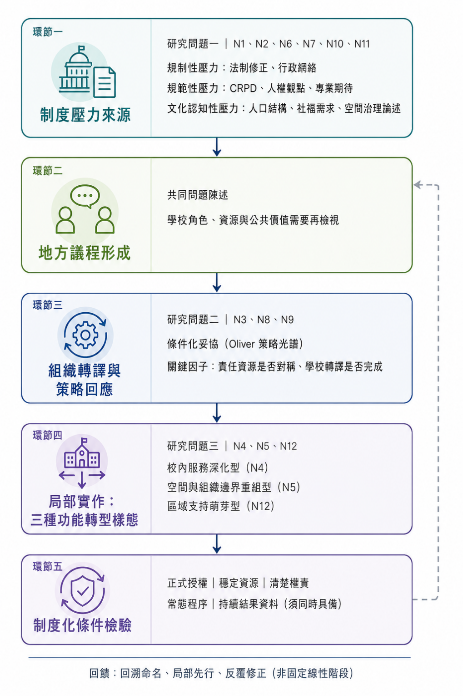

第一節 研究證據基礎、分析配置與判讀邊界
研究者在本章依據研究目的與待答問題，探討融合教育政策脈絡下，高雄市立特殊教育學校面臨的制度壓力、地方政府與學校等相關行動者所形成的組織回應，以及功能轉型的構想、實踐樣態與制度意義。研究者不將政策倡議、組織回應與轉型成果視為必然的線性歷程，而是依據文件、訪談及制度事件，判斷各項主張屬於制度脈絡、構想研議、實際作法、初步結果或尚未形成結果。在論述上，研究者依循分析主張、訪談語料、文件證據、制度事件、差異或反例及證據層級，並審慎界定推論範圍與文字強度。
壹、研究資料構成與可用證據範圍
本研究以高雄市四所市立特殊教育學校共同構成的地方特殊教育學校系統為研究個案，四校則作為嵌入式分析單位。資料來源包括12場半結構式訪談、14位研究參與者、47份經歸位與去重的政策、行政、會議及校務文件，以及N1至N12共12個制度事件節點。研究參與者依制度位置分為政策／治理端、組織決策端、專業實作端與公共性端四類，使同一制度事件得以從政策形成、組織判斷、現場實作及家庭或公共服務需求等不同位置進行比較。
12場訪談經逐字稿整理與意義單位切分後，共形成845筆逐筆分析資料。經判定狀態覆核，其中574筆為正式判碼、163筆為候選判碼，兩者合計737筆，構成本章分析研究問題與形成研究主張的可用材料，占全部意義單位87.2%。另有89筆背景描述及14筆脈絡資料，合計103筆，占12.2%（此為依「判定狀態」之分類；後文依「證據性質」分類之「脈絡／背景104筆」屬另一獨立分類軸線，兩者計算基準不同，1筆之差非計算錯誤），僅用於說明受訪者制度位置、知情範圍、事件背景或相鄰語境，不單獨作為制度回應或結果的主要證據；其餘5筆占0.6%，因語意不完整、與研究問題關聯不足或無法建立可辨識命題而排除。相關資料構成如表4-1所示。
表 4-1
正式判碼
574
67.9%
可作為主要研究發現之證據，仍須依文件層級、角色知情範圍及反例情形控制論述強度
候選判碼
163
19.3%
可形成保守描述或待檢證命題，不單獨提升為穩定制度、明確結果或因果結論
背景描述
89
10.5%
用於交代制度位置、情境與知情範圍，不單獨支撐組織回應或研究結果
脈絡資料
14
1.7%
與相鄰完整語境合併理解，作為事件或敘事脈絡
排除
5
0.6%
不納入本章論證
合計
845
100.0%
—
註。比例因四捨五入可能不完全等於100%。正式判碼與候選判碼合計737筆；筆數為意義單位數，不代表獨立樣本數或角色支持比例。
上述845筆資料是逐字稿經語意切分所形成的分析單位，而非845個彼此獨立的觀察值。組織決策端的語料較多，主要反映訪談長度、敘事密度及事件參與範圍，不能據此推論其觀點比其他角色重要。相同地，同場共同訪談中的補充或附和雖分開編碼，亦不視為彼此獨立的事件來源。研究者在本章判斷研究發現的證據權重，主要依據受訪者是否直接參與事件、知情範圍是否與命題相符、文件是否具有正式性與時間定位、不同來源能否相互印證，以及是否存在矛盾或反例，而非依語料數量進行統計推論。
47份文件在本研究中具有不同證據功能。法規、正式計畫、核定文件、會議紀錄、契約、校級執行計畫與統計資料，可分別確認制度依據、程序狀態、責任安排、實際作法或背景趨勢；訪談則補充文件較難呈現的政策轉譯、協商過程、角色判斷、執行限制及未形成正式紀錄的實作經驗。因此，文件與訪談並非相互替代，而是依命題性質形成相互印證、相互補充、相互矛盾或單一來源等不同關係。單一提案只能證明議題曾被提出，單次會議只能證明曾經討論，短期契約可以證明特定安排已執行，但若缺乏常態程序、穩定資源與持續運作紀錄，仍不足以判定為長期制度化。
貳、研究問題與制度事件節點之分析配置
研究者依三個研究目的及六項待答問題，將737筆可用材料連結至12個制度事件節點。節點是整合不同資料來源及重建制度歷程的分析錨點，不代表固定發展階段，也不預設事件必然由制度壓力依序進入組織回應、實作與制度化。經重新配置後，736筆可用材料可依主要節點歸入三組研究問題；另有1筆候選判碼屬親子教育之預期功能，但尚未配置主要制度事件節點，故保留為未定錨材料，不納入三組筆數比較。惟該筆材料之次要制度事件節點為N12，將於第四節區域特殊教育資源中心方案研議中，作為候選命題之補充材料引用，並非從此不再處理。三組配置如表4-2所示。
表 4-2
研究問題一：制度壓力如何形成
N1、N2、N6、N7、N10、N11
254
83
337
制度壓力／形成脈絡174筆；分析中央制度、地方需求、學生結構與治理脈絡
研究問題二：如何研議並形成組織回應
N3、N8、N9
120
50
170
實際作法53筆、制度壓力／形成脈絡48筆；分析治理啟動、書面回應與資源協商
研究問題三：功能轉型構想、實踐樣態與制度意義
N4、N5、N12
200
29
229
初步結果88筆，實際作法與形成脈絡各65筆；分析試辦、空間實作與方案研議
未配置主要節點
—
0
1
1
親子教育預期功能之候選命題，暫不納入節點比較；次要節點為N12，於第四節併入補充引用
合計
N1—N12及未定錨材料
574
163
737
—
註。節點依逐筆資料之「主要制度事件節點」統計。節點配置用於分析聚焦，不表示節點具有固定先後、完成度排序或線性因果關係。
研究問題一共有337筆可用材料，其中正式判碼254筆、候選判碼83筆，正式判碼占75.4%。此組以制度壓力／形成脈絡174筆最多，占本組51.6%，顯示中央法制、政策倡議、績效責任、學生與員額結構、社會福利需求量能及地方政府的推動意向，構成理解特殊教育學校角色再定位的重要脈絡。後續分析中，研究者將以Scott（2014）提出的三個制度支柱——法規強制（規制性）、專業規範（規範性）與觀念認知（文化認知性）——辨識壓力來源，並參照DiMaggio與Powell（1983）「制度同形化」（即不同組織的做法逐漸趨於相似）的觀點，討論法令要求、專業規範與不確定情境如何影響地方政府及學校對正當性與組織任務的理解。惟研究者不因法規或政策方向存在，即推論地方必然採取一致回應。
研究問題二共有170筆可用材料，其中正式判碼120筆、候選判碼50筆，正式判碼占70.6%。此組以實際作法53筆最多，制度壓力／形成脈絡48筆次之，兩者數量接近，說明組織回應並非只是列出學校採取哪些行動，而是在地方行政與跨機關協調條件、學校任務、安全責任及資源限制下逐步形成。此組另包含7筆未推動、未形成共識、暫緩或中止的材料。這些資料不被視為資料缺漏，而是用來理解組織為何延緩、採取附帶條件的接受方式（條件化接受），或維持既有安排的重要負向證據。後續將以Oliver（1991）的策略回應觀點檢視其可能意義，但只有在資料能呈現明確制度要求、行動者知情與具體回應方式時，才進一步判定是否構成順從、妥協、迴避、抗拒或其他策略，不因「尚未推動」直接推論為迴避。
研究問題三共有229筆可用材料，其中正式判碼200筆、候選判碼29筆，正式判碼占87.3%，為三組中正式判碼比例最高者。此組以初步結果88筆最多，另有實際作法與制度壓力／形成脈絡各65筆，呈現「形成條件—實際作法—初步結果」三層相互連結的證據結構。後續分析中，研究者將分別檢視高支持需求回應與試辦計畫、甲校空間實作，以及仍在研議中的區域特殊教育資源中心方案。第貳章所述的制度轉譯、合法性、協作治理、資源依賴與空間正當性等觀點，將分別用來說明不同實踐為何形成、又具有什麼制度意義；當書面規範與實際運作出現落差時，則作為判斷是否可能「去耦合」（即制度形式與實際做法出現分離）的分析線索，而非預先認定已經發生去耦合。
三組材料幾乎涵蓋全部可用語料，顯示研究目的、待答問題、分析概念與事件節點之間具有良好的內部一致性，現有架構可以容納絕大多數研究材料。然而，此一對應結果不能被解釋為資料在完全沒有研究者介入的情況下自然分成三組，因為節點的建立與歸類本身即是理論敏感度、主題分析與制度事件分析共同作用的結果。較適切的解釋是：既定架構未造成大量無法歸類的材料，且各組均保留不同證據性質、角色差異與負向案例，因而具備進一步比較與理論對話的基礎。
參、證據性質、論述強度與跨來源檢核原則
737筆可用材料除依判定狀態區分為正式與候選判碼外，另依其能支持的命題層次區分證據性質，此為獨立於判定狀態之另一分類軸線；兩者所加總之背景／脈絡類筆數（前述103筆與此處104筆）分屬不同判準之個別統計，非計算誤差。全體845筆資料中，制度壓力／形成脈絡287筆、實際作法193筆及初步結果147筆，構成本章呈現研究結果的主要證據；預期功能85筆與預期影響12筆，僅能說明政策意圖或行動者期待；未推動、未形成共識、暫緩或中止12筆，保留為負向案例；另有104筆脈絡／背景資料與5筆排除資料。就目前資料而言，可驗證成效為0筆，因此本章不宣稱任何方案已經證實有效，也不以「成功轉型」「顯著提升」或「建立完整制度」等語句超越證據。「初步結果」係指受訪者直接觀察到的運作變化、服務使用情形、角色互動或短期影響，可寫為「受訪者觀察到」「現有資料顯示已出現」「初步呈現」或「在特定期間與條件下可見」，但不能推論為穩定、持續、可歸因於特定措施的成效；可驗證成效至少需要明確指標、基準或比較資料、持續觀察、複數來源支持，以及足以排除主要替代解釋的證據，目前資料尚未符合此一門檻。候選判碼因知情範圍、文件對應、語意完整性、事件定位或跨角色支持仍有限，正文引用時，研究者將以「可能反映」「可視為一項待檢證命題」等保守語句呈現，並優先與正式判碼、相鄰語境及文件證據共同使用；若與正式文件或其他角色資料相互矛盾，不以研究者偏好的解釋消除差異，而將差異本身納入分析。
質性研究的可信度不在於所有資料都得出相同答案，而在於研究者能否說明主張來自何處、不同來源為何一致或不一致，以及現有證據最多能推論到何種程度（Lincoln & Guba, 1985）。本研究據此將訪談與文件之對應關係區分為四類：相互印證（不同來源對事件時間、正式決定、實際作法或責任安排大致一致）、相互補充（文件確認程序與制度狀態，訪談補充協商歷程、執行經驗或角色判斷）、相互矛盾（政策宣示、書面安排與現場經驗出現差異），以及單一來源（命題目前只有一份文件或一位受訪者支持），後兩類資料不予刪除，而是降低結論強度或形成待檢證命題。依第參章逐筆判定之文件對應程度統計，全體845筆資料中，直接支持76筆、直接文件候選13筆、部分支持561筆、間接旁證152筆、不適用或無適切文件43筆；於737筆可用材料中，直接支持69筆、直接文件候選10筆、部分支持521筆、間接旁證125筆、不適用或無適切文件12筆，可見可用材料仍以部分支持及間接旁證為主，故文件與訪談之關係須逐筆檢視其對應強度，不以文件是否存在作為證據強弱之唯一依據。
四類制度角色的比較亦不採人數多寡作為判準：政策／治理端較能說明政策目標、行政程序與跨局處協調，組織決策端較能說明校務判斷、資源配置、安全責任與組織可行性，專業實作端提供教學、專業服務與日常運作經驗，公共性端則補充家庭需求、成年服務、委辦進駐與公共資源使用觀點；角色間之差異可能源自職責、知情範圍、風險承擔與正當性判準不同。後續各節除呈現跨角色共同觀點，也將保留學校條件差異、責任認知不一致、未推動、延緩及未形成共識等情形，以避免將複雜治理歷程壓縮成單一成功敘事。反例在本研究中具有兩項功能：其一用來檢查主要主張是否過度概括，例如多數資料顯示某項合作已進入實作，但仍有角色指出權責、門禁、安全、保險或資源配置未明，研究結果應同時說明實作存在及其制度化限制；其二用來辨識組織回應的差異與非線性，未推動、暫緩或未形成共識可能反映資源不足、權責不清、合法性衝突、風險外溢或策略性延緩，其具體意義須由事件脈絡、正式紀錄及角色敘說共同判斷，而非一律解釋為失敗或抗拒。
肆、研究結果之解釋範圍
本章結果的第一項邊界是個案推論範圍。本研究分析的是高雄市立特殊教育學校系統在特定政策、人口、資源，以及地方行政與跨機關協調條件下的制度歷程，目的在提出具情境脈絡的解釋，而非推論全國所有特殊教育學校。四所學校的學生結構、空間條件、組織經驗與外部合作程度亦不相同，任何單一學校的實作均不直接代表其他三校，更不作為排列學校轉型程度的標準。研究結果可提供其他縣市或相似的地方政策與跨機關協調情境比較參照，但其可轉移性須由讀者依制度條件判斷（Geertz, 1973；Stake, 1995）。
第二項邊界是歷程重建與因果判斷。制度調整跨越不同年度、機關與組織層級，部分口頭協商、短期作法或早期互動未必留下完整文件。研究者依可確認的日期、正式紀錄、直接參與敘說與跨來源比對重建事件，不以事後敘事推定精確因果順序，也不因兩項事件時間相近即認定前者造成後者。第貳章的制度理論、協作治理及資源依賴觀點用於解釋可能機制，但每一項理論解釋仍須回扣具體資料；若證據只能支持關聯、行動者理解或研究者詮釋，研究者在正文中將明確使用相應語氣。
第三項邊界是研究者位置與詮釋權力。研究者長期服務於特殊教育學校並擔任校長，具備理解制度語境與接近研究場域的優勢，也可能受到既有經驗、組織責任與政策期待影響。因此，不以研究者熟悉的學校經驗作為全市共同模式，不以研究者曾參與的推動方向作為轉型完成度標準，也不因研究者本人或同校受訪者的職務位置提高資料權重。重要主張均回到匿名語料、E碼文件、N碼事件節點、角色比較與反例進行檢查，並區分資料內容、研究者詮釋與理論對話。
第四項邊界是功能轉型與制度化的判定。研究者將功能轉型理解為特殊教育學校在維持原有教育與高支持需求服務基礎上，任務、服務對象、服務方式與公共角色的延伸、重組或再定位；不因單一空間被使用、單一方案開始試辦、一次跨局處會議形成共識或一紙契約完成簽訂，就判定學校已完成功能轉型。制度化至少涉及正式授權、穩定資源、清楚權責、常態程序及持續運作等複數條件。當書面政策與實際作法存在落差時，研究者在本章將其視為制度轉譯、責任外溢（即責任範圍超出原先規劃、擴散到其他單位或角色）或可能去耦合的線索；但是否真的符合去耦合的情況，仍須檢查形式結構與實際活動是否持續分離，以及這種分離是如何形成的（Boxenbaum & Jonsson, 2008）。
伍、討論分析順序
在上述證據基礎與判讀邊界下，本章後續依三組研究問題展開。第二節分析制度壓力之形成與脈絡，涵蓋N1、N2、N6、N7、N10及N11，並以制度三支柱與制度同形化觀點討論中央制度、地方需求與學校正當性之間的關係。第三節分析組織回應與治理協作，涵蓋N3、N8及N9，檢視地方跨局處協調如何啟動、學校書面回應、校長聯席協商及員額與資源配置，並以策略回應、協作治理與資源依賴觀點說明不同回應形成的條件。第四節分析功能轉型構想、實踐樣態與制度意義，涵蓋N4、N5及N12，依預期功能、實際作法、初步結果與未竟狀態的證據層次，討論高支持需求回應、空間實作與區域資源中心研議。第五節再跨越三組研究問題，比較四類角色觀點及制度壓力、組織回應與初步結果之間的關聯，並回扣第貳章文獻說明本研究結果的支持、修正與補充意義。
整體而言，本章可建立的研究主張集中於制度壓力如何形成、地方政府、學校及相關行動者如何研議與回應、哪些安排已進入實際作法、目前出現何種初步結果，以及哪些構想仍停留於研議、延緩或未形成共識。現有資料足以進行制度歷程、組織回應與功能轉型樣態的厚實描述及理論討論，但不足以宣稱任何方案已達可驗證成效。以下各節均在此證據邊界內，依研究問題呈現結果，並與第貳章相關理論與實證文獻進行對話。
第二節 制度壓力之形成與多層次脈絡
本節回應研究問題一，探討融合教育政策深化、CRPD人權觀點落實及《特殊教育法》修正，對高雄市立特殊教育學校形成的制度壓力，並分析其政策發展、社會需求、少子化，以及地方行政與跨機關協調脈絡。分析涵蓋N1、N2、N6、N7、N10及N11六個制度事件節點，共337筆材料，其中正式判碼254筆、候選判碼83筆。證據以制度壓力／形成脈絡174筆最多，另有實際作法、預期功能、初步結果、預期影響及未推動等材料。
此一分布顯示，研究問題一雖以壓力形成為焦點，資料亦呈現行動者已採取的局部作法、對未來功能的期待及政策落實限制。因此，制度壓力不能僅視為由上而下的單向命令，而須分析不同制度來源如何被地方政府、學校及相關行動者理解、轉譯及協商。
資料顯示，四所學校面對的並非單一少子化壓力，而是六項彼此交織的制度線索：受教權與支持服務法制化、區域特殊教育支持系統倡議、中程計畫與專業責任、學生及班級結構重組、跨生命階段身心障礙服務需求，以及地方政府對公共資源與校園空間效益的治理期待。各線索兼具規制性、規範性與文化認知性，且常同時出現。
Scott（2014）提出的三個制度支柱（規制性、規範性與文化認知性）可用以辨識壓力來源，但不宜將資料切割為互不相關的三類；DiMaggio與Powell（1983）所指強制性、規範性與模仿性等「同形化」機制（即不同組織的做法逐漸趨於相似），則有助於說明制度期待如何在中央、地方與學校之間擴散。高雄個案並未呈現四校被動走向相同模式，而是相似壓力進入不同組織條件後，形成程度不一的認知、接受與疑慮。研究問題一各節點之可用材料與主要判讀重點，整理如表4-3。
表 4-3
N1 法制修正
13
3
16
四類角色
受教權、融合教育與支持服務由理念進入法制要求
N2 資源中心倡議
55
47
102
四類角色
區域支持方向已提出，但任務、資源及地方工具尚未明朗
N6 中程計畫責任
9
1
10
兩類角色
課程、專業發展及績效期待進入校本實作，但證據範圍有限
N7 學生員額結構
71
20
91
四類角色
總量與部別重組、減班及高支持需求相對集中並存
N10 社福需求量能
93
9
102
四類角色
畢業後、成人、家庭與社區支持需求擴張
N11 白皮書治理意志
13
3
16
三類角色
地方政策方向、公共資產效益與空間正當性
合計
254
83
337
四類角色
多層次制度壓力交會，不能由單一因素解釋
註。角色覆蓋係指各節點可用材料所涵蓋的制度角色類別數；筆數用於檢查資料覆蓋，不作為主題重要性或角色支持比例的統計權重。
壹、中央法制與政策期待所形成的制度壓力
N1：受教權與支持服務由理念進入法制要求
N1共有16筆可用材料，13筆為正式判碼、3筆為候選判碼，四類制度角色均有資料。15筆直接連結E001，即112年修正之《特殊教育法》；另1筆為候選判碼，同時連結E001與E006（114年度教育部特殊教育行政支持網絡會議紀錄），內容為受訪者對區域資源中心規定適用範圍之個人解讀，屬待檢證命題，尚待其他資料確認。資料的共同指向是：法制修正對特殊教育學校造成的壓力，不只是要求遵守新的行政程序，而是重新界定教育系統對身心障礙學生的責任範圍。受教權、安置適切性、合理調整、通用設計、專業團隊與後續支持服務逐步被放入同一支持與責任架構，使特殊教育行政不再只完成鑑定與安置，而須持續處理學生能否實質參與、是否獲得適切支持，以及不同教育場域如何承接責任。E001可確認這項法制基礎，但法條本身只能證明規範已成立，不能單獨證明地方支持系統已充分運作。
在特教法修法之後，鑑定的基準、特教服務還有融合教育，跟以前的概念完全不一樣；除了鑑定，還有安置適切性以及後續支援服務。（A1-P003-2026.07.21）
A1的敘述呈現其作為政策／治理端受訪者對任務擴張的直接感受。過去行政工作可被理解為鑑定、安置及服務資格確認，修法後則形成一條更長的責任鏈：行政機關必須同時面對融合教育品質、支持服務可近性、安置後續追蹤與跨專業協調。這項變化具有明顯規制性，因為法規提高了地方政府與學校必須回應的最低義務；同時也具有規範性，因為「適切」不再只指學生被安排到某個場所，而是指其需求是否被理解、支持是否到位、參與是否具有實質意義。Scott（2014）所稱規制與規範支柱，在此不是先後出現，而是透過修法彼此強化。法律提供強制性基礎，人權與專業論述則改變行動者判斷何者是合理教育安排的標準。
組織決策端資料進一步顯示，受訪校長並未將融合教育理解為特殊教育學校教育責任的消退。B2指出，過去可能接受在家教育或床邊教學的學生，在受教權與家長權利意識提高後逐漸進入學校；B4則從校務管理立場強調，外部合作與功能擴張仍須以學生教育權、零拒絕、個別化教育、專業團隊、醫療與安全支持為前提。B4的說法反映學校在角色再定位時對核心教育責任的自我約束；至於法制壓力是否具有雙重方向，仍須結合法規與其他資料判斷。綜合E001與跨角色資料，本研究較能支持的是：法制與融合教育一方面提高普通教育體系的支持責任，另一方面並未解除特殊教育學校對高支持需求學生的既有教育義務。
一定要保留學生教育權、零拒絕、個別化教育、專業團隊、醫療與安全支持；外部合作不得排擠核心功能。（B4-P053-2026.07.31）
公共性端受訪者D2的材料則揭示權利法制化與實際受益之間仍有落差。D2指出，一般終身教育雖宣稱身心障礙者可以參加，若沒有易讀資訊、提示及個別支持，可能只有形式參與而沒有實質受益；CRPD所倡議的社區生活，也受現有社區居住量能與支持人力限制，部分具重度障礙者的支持需要仍未充分回應。此筆材料不能用來否定權利規範，而是說明權利進入法制之後，仍須轉化為具體服務供給。CRPD Committee（2016）將融合教育界定為教育文化、政策與實務的系統性轉型，而非單純改變安置地點；本研究結果與此一方向相呼應，並進一步顯示，在本研究資料範圍內，地方制度壓力可能來自「權利承諾已提高，但支持工具尚未同步完備」的落差。
此一結果亦可與國內融合教育研究相互對照。鈕文英（2023）指出，CRPD理念已逐步反映於我國《特殊教育法》有關合理調整、支持服務與學生參與權益的規定；呂依蓉（2024）強調，融合教育除安置與環境調整外，尚涉及互動關係人的參與、融合文化及全校層級實踐；洪儷瑜與曹祐榮（2024）則指出，新修法已強化學生參與權、普通教育責任與社區支持網絡。本研究資料與上述制度方向相呼應，並進一步呈現：權利與支持概念進入地方政府的正式討論與協調後，仍須轉化為人力、行政流程與可持續的服務工具，始可能形成學生實際可受益的安排。
專業實作端受訪者C2的資料進一步顯示，規範性壓力如何轉化為教學現場的具體作法，也顯示此一轉化仍缺乏明確依循。C2描述，透過調低投影高度、選用乾淨牆面搭配燈光與姿勢調整等簡單方式，可讓不同障礙程度學生共同參與同一堂課程，形成通用設計的入班實例；此一個案顯示，合理調整與通用設計已進入該受訪者的日常專業判斷。同一受訪者也提出一項候選命題：法制修正雖已成立，但中央若未進一步訂定更細緻的法規與政策方向，地方與學校仍缺乏明確依據推動相關調整，此點可視為受訪者提出、尚待其他資料確認之待檢證命題。
投影螢幕過高，發展遲緩幼兒觀看時要仰頭，可以調低投影或改用攜帶式投影機；把影像投到乾淨牆面、關燈並擺好姿勢，重障孩子也能感受光影與聲音。簡單調整可以讓不同障礙程度的孩子都受惠，這就是通用設計。（C2-P036-2026.07.23）
就研究問題1-1而言，N1所呈現的核心制度壓力，是特殊教育學校合法性基礎由「提供隔離或集中安置」轉向「保障高支持需求學生權利並參與整體支持系統」。Suchman（1995）指出，合法性涉及組織行動是否被制度環境認定為適當且合理；在本個案中，特殊教育學校仍因其專業人力、設備與高支持需求服務具有存在正當性，但其公共價值不能只以學生被安置於校內來證明，而須說明如何保障實質參與、提供合理支持及與普通教育和社區系統形成關係。此一壓力尚未直接決定學校應採何種轉型模式，卻已改變地方政府與學校說明自身任務時所使用的正當性語言。
N2：區域資源中心政策倡議與地方制度工具不足
N2共有102筆可用材料，是研究問題一中材料數量最多的節點之一，其中正式判碼55筆、候選判碼47筆。其證據性質以預期功能35筆最多，其次為實際作法28筆與制度壓力／形成脈絡26筆；另有初步結果7筆、預期影響3筆及未推動或未形成共識3筆。這項結構具有重要意義：區域特殊教育資源中心已成為中央會議、法制定位與地方訪談中的明確政策用語，但將近半數材料仍屬候選判碼，且預期功能多於可確認的制度結果。E005與E006兩份中央行政支持網絡會議紀錄，可以證明區域資源中心的任務、特殊教育學校角色及跨系統支持曾進入正式討論；然而，文件清冊亦明確限制，兩份文件不能證明高雄市已完成建置，E006反而支持任務與地方方案仍待釐清。
政策／治理端至少有兩筆受訪資料提及相近的治理條件：中央已提供方向與部分法制依據，但地方仍須回答中心定位、四校分工、既有中心關係、地域配置、人力來源與資源運用等問題。A2指出，《特殊教育法》已提及特殊學校可以設置區域型資源中心，中央對人力配置亦有規範，但在真正推動之前，仍須先界定中心任務及學校資源如何運用。另一筆資料則直言相關安排「還未明朗」，必須把四校校長意見、地域條件、原有中心與新中心定位納入全面討論。這些資料顯示，中央規制性壓力已足以使議題進入地方政府的正式討論，但仍未形成可以直接執行的地方制度與作法。
除了人員配置之外，應該要整體考量中心的任務。任務到底要怎麼分配？要怎麼樣去運用學校的資源？應該要先去定位。（A2-P004-2026.07.21）
兩位組織決策端受訪者分別從校本特色與現有人力提出不同判斷。B3認為可以從既有特色出發，例如適應體育、社群研習、專業諮詢或輔具支援，將校本專長逐步延伸至區域；B2則明確指出：「以目前高雄市四所特教學校的現況，以現有的人力來做區域型支援，我覺得不可能」（B2-P076-2026.07.16）。兩者並非代表組織決策端的共同立場，但共同呈現一項分析上的張力：功能延伸若要進入實作，仍須同時處理人力、組織設計及校內教育責任。B3的構想顯示支持功能具有向外延伸的可能，B2的判斷則提醒，若中央只提出角色期待而未配置穩定資源，壓力可能轉化為校內額外負荷。
專業實作端受訪者C2的資料補充了區域支持的工作內涵與勞動條件。C2並不排斥被安排至資源中心，也認為在班級數減少、現有教學工作獲得合理調整時，可以提供支援；但其支持具有「行有餘力」的明確條件。對於訪談者所提出的諮詢、評估、輔具、行為支援、轉銜與培訓等功能，C2表示認同，但同時指出這些項目仍不足以構成實質服務——若資源中心僅停留在採購或物資分配層次，專業人員又只能以短暫接觸了解學生狀況，將無法處理真正困難的個案；唯有透過長期、個別化的客製化服務，才能發揮專業深度。這筆資料將政策中的「區域支持」轉化為可觀察的專業工作，也呈現C2對人力配置的理解：相較於目前由外聘巡迴治療師以有限鐘點服務的模式，長期在校、能持續追蹤個案的專職人力較能形成有效策略，不能只計算員額數量，仍須考慮服務時間與接觸的持續性。
剛才校長提到的功能，資源中心都應該具備，但以我來看，還可以做得更深入……如果資源中心只是一個採購單位，治療師又只能短時間了解學生狀況，就沒有辦法深入處理非常困難的問題。如果是我來做，可能會做很多客製化、調整與修改。（C2-P031-2026.07.23）
公共性端則把區域資源中心連結至家庭與普通學校的服務可近性。D1想像特殊教育學校若成為社區資源中心，可降低高支持需求學生在普通教育場域中因支持不足而被排除的風險；D2則將學校功能放入身心障礙者終身生涯，認為支持不應只停留於教育階段。這些主張屬公共價值與預期功能證據，不足以證明實際制度已形成，卻說明區域資源中心之所以取得政策吸引力，並不只是因為特殊教育學校可能有空間或人力餘裕，而是因為家庭、普通學校與成人服務之間存在持續的支持斷裂。
我覺得特教學校在既有的裝置資源跟人力底下，慢慢可以延伸去做終身學習……其實也可以成為社群的資源中心去提供一些支援。（D2-P028-2026.07.24）
與此相對照，European Agency for Special Needs and Inclusive Education（2019）指出，專門教育機構在融合教育體系中可能由直接教育服務提供者，擴展為支援普通教育、促進專業協作與整合資源的區域支持據點。本研究的N2資料支持「角色延伸已成為可辨識政策方向」，但也修正了將此方向視為自然轉型的想像。高雄市所面臨的關鍵不在於是否認同區域支持理念，而是由誰授權、如何分工、資源從何而來、如何不排擠校內學生，以及既有行政支持網絡與新中心如何銜接。換言之，國際模式在地方落實前，仍須經歷「制度轉譯」，也就是依地方制度與學校條件重新理解、調整後再形成具體作法，而不是直接複製。
國內文獻亦提供相近但更貼近我國制度歷程的參照。洪儷瑜（2014）指出，特殊教育制度在連續性支持系統逐步建構下，特殊教育學校的角色已由隔離場域擴增為支持普通學校的專業支持據點；張蓓莉（2000）與郭憲鐘（2024）則分別從多層級資源網與法制設計提醒，區域支持需要跨層級分工及明確制度基礎。N2資料與此方向相互呼應，但也顯示高雄市現階段仍在處理任務定位、四校分工、既有中心關係與資源配置，尚不能將角色倡議等同於中心建置完成。
DiMaggio與Powell（1983）的制度同形化觀點可用以理解區域資源中心為何逐漸成為各方共同使用的正當語彙：中央法制與正式行政要求形成強制性訊號，中央會議紀錄、融合教育及專業支持論述主要提供議程與規範訊號，各地資源中心或國際專門機構轉型經驗則提供可能模仿的組織形式。然而，研究者未發現四校已因此形成一致結構。相反地，學校依既有特色、地域、學生需求與人力條件提出差異化想像。這顯示同形化壓力可以使組織採用相似語言，卻不必然使實際工作與治理配置相同；若只有名稱與倡議相似，而正式授權、資源及程序仍未形成，便不能把政策擴散寫成制度完成。
因此，N2對研究問題1-1的回答是：區域資源中心政策對特殊教育學校形成「角色可被重新界定」的制度壓力，使學校不再只被期待服務校內學生，而被詢問能否承擔區域支援、專業諮詢與資源整合。對研究問題1-2而言，此壓力是在中央法制與行政支持網絡先行提出方向、地方四校條件不一、既有中心定位尚待整合及支持需求持續外溢的脈絡中形成。現階段最適切的研究判斷是「政策方向已形成，地方制度工具仍在研議」，而不是「高雄市已建立區域型資源中心」。
N6：中程政策進入學校後的選擇性轉譯與專業實作
N6共有10筆可用材料，其中9筆為正式判碼、1筆為候選判碼，主要涵蓋組織決策端與專業實作端。文件證據以E002「教育部第二期特殊教育中程計畫（112–116學年度）」為核心，該文件可確認中央特殊教育政策的推動目標、發展方向與計畫期程；附錄五並將B2、B4與C2列為主要對應受訪者。因此，本節所能回答的並不是各校是否「完成」中程計畫，而是中央政策所提出的專業期待，進入特殊教育學校後如何被不同位置的行動者理解與轉化。
從資料來看，中程政策進入學校後，學校面對的關鍵，與其說是執行與否的二分問題，不如說是「哪些要求可以直接進入既有校務、哪些必須重新調整」的判斷。特殊教育學校本身具有高度異質的學生組成、不同學段規模與專業支持需求，因此中央層次所提出的共同政策方向，進入各校後不可能完全依同一形式落實。B2的敘說即呈現這種制度轉譯問題。其指出，普通教育課程制度通常依完整年級與班級結構設計，但特殊教育學校在部分學段可能僅有極少數班級，學生之間的能力與支持需求差異又相當明顯；在這樣的條件下，形式上相同的課程規範，實際執行時必須重新回到學生組成及學校規模進行調整。
這項資料所反映的重點，不只是特殊教育學校與普通學校「不同」，而是中央政策在進入地方組織後，必須經過情境化判斷。亦即，制度要求雖提供一致的方向，組織實際上仍依自身條件重新界定其可行形式，而非被動複製政策。這也說明，特殊教育學校的校本轉譯不應被理解為降低政策標準，而是在共同政策原則下，重新建立適合其學生與組織條件的實施方式。
相較於組織決策端較著重制度與校務條件的適配，C2的資料則進一步呈現政策與專業規範如何進入個別專業人員的實務。C2回顧自身專業服務方式的改變時提到：
一方面是學校評鑑委員給我建議，另一方面是參加課程研習，這些都比較主張入班服務。後來我試著調整，慢慢摸索出一套自己的方法。（C2-P006-2026.07.23）
這段語料的重要性在於，專業實務的改變並不是由單一行政命令直接造成。評鑑委員的建議、研習所傳遞的專業觀點以及個人實務經驗共同作用，才逐步促成服務方式的改變。現有資料顯示，C2由較偏向抽離式或個別技能訓練的工作方式，逐漸增加入班支持，並將關注焦點由單項功能表現延伸至學生參與、行為支持需求與生活品質。
因此，N6所呈現的「轉譯」並非單純將政策文字換成學校計畫，而是一個逐步試作與專業學習的歷程。政策與評鑑提供「什麼樣的服務被認為較適切」的方向，但專業人員仍必須在具體班級情境中判斷如何介入，並透過實際操作修正原有工作方式。換言之，專業規範所形成的是方向性壓力，而不是標準答案。
這也使N6與單純的政策遵循有所不同。從資料中可以觀察到，中央層級的政策語言，例如支持服務、專業合作、學生參與及服務品質，進入學校之後會逐步轉化為校務規劃、課程安排以及專業人員的工作方法，但不同層次之間並不存在自動銜接。E002能夠證明中央已有明確的政策目標與期程，卻不能據此推論學校已產生相同程度的實質改變；本研究的資料也顯示，同一類政策要求進入不同組織與不同專業位置後，其實際樣態仍受到學生需求、人員經驗與既有工作方式影響。
從Scott（2014）的制度三支柱來看，N6較明顯呈現的是規制性要求與規範性期待的交會。中程計畫、課程制度與評鑑機制提供正式的政策方向，而專業研習、評鑑意見及專業社群所形成的服務觀念，則進一步界定何種實務被視為較適切。兩者共同作用，使學校與專業人員逐步接受支持導向、參與導向及跨專業工作的政策語言。然而，制度規範的趨同並不等於實作形式必然一致。
這一點對理解特殊教育學校的制度調整尤其重要。N6資料較能支持的不是「中程計畫已經帶動學校完成轉型」，而是中央政策逐步形成一套共同的專業語言與發展方向，各校及其專業人員再依組織條件進行選擇性轉譯。換言之，政策可以提高改變的正當性，卻不能取代校內形成實作能力的過程。專業人員仍須有足夠的時間、知識、協作條件與試作空間，政策方向才可能由書面要求進入日常工作。
因此，N6所形成的制度壓力可理解為一種「專業更新與組織轉譯的持續性要求」：中央政策逐步界定特殊教育應朝支持、參與與專業協作發展，但學校如何把這些共同方向轉化為課程、專業服務與校務運作，仍須依其學生結構、組織規模與專業條件形成不同路徑。這也說明，相同的制度壓力可能形成共同的政策語言，卻未必產生相同的組織形式。
就研究問題1-1而言，N6顯示中程計畫、課程規範、評鑑及專業發展機制，使特殊教育學校持續面對「專業服務應如何更新」的規範性壓力；對研究問題1-2而言，這項壓力則是在中央共同政策方向與地方學校差異條件交會之下形成。因此，N6與N1及N2雖同屬中央層次制度力量，其作用方式並不相同：N1主要提高法定權利與支持義務，N2重新提出特殊教育學校可能承擔的區域角色，而N6則透過課程、評鑑、研習與計畫責任，較持續地進入學校日常專業運作之中。
貳、地方結構變化與公共需求所形成的制度壓力
N7：學生總量變動、學段重組與高支持需求相對集中
N7共有91筆可用材料，其中正式判碼71筆、候選判碼20筆，制度壓力／形成脈絡64筆，占本節點多數；另有實際作法18筆、初步結果4筆、預期功能3筆及預期影響2筆。組織決策端67筆，專業實作端16筆，公共性端7筆，政策／治理端1筆。此一角色分布使N7特別能呈現學生與班級結構變化如何進入校務決策及現場工作，但政策／治理端資料相對稀少，地方總體政策判斷主要須由E009、E010、E038、E039及四校中長程計畫補強。
依教育部111至114年度特殊教育統計年報整理，全國特殊教育學校學生數由4,594人下降至4,307人，高中部由2,988人下降至2,629人，國小部則由636人增加至766人；高雄四校合計學生數由500人下降至471人，其中高中部由298人下降至250人，幼兒部與國小部略有增加（教育部，2022，2023c，2024，2025）。這些背景數據顯示的不是所有學段同步萎縮，而是高中部收縮與低年段需求相對前移所形成的結構重組。公開統計可以確認總體趨勢，卻不能直接推論每一校都有相同變化；因此，本研究再以E038、E039班級與員額會議紀錄、E020至E022及E025校級中長程計畫，以及跨校訪談辨識校際差異。
部分組織決策端資料指出減班、員額及課程組織之間存在連動。B3回顧部分年段由三班逐年緩降至兩班；B4則指出，學生數下降後，課程不能完全依過往班級規模開設，部分課程須跨班、跨部別合作，或轉向更強的個別需求與功能性課程。這些資料說明，總量變動所牽動的，不只是招生數字的增減，還包括教師配置、課程組合、行政分工與空間使用的調整。當班級數降低時，組織可能出現人力縮減壓力；但若學生障礙程度與醫療、行為、溝通或生活照護需求同步提高，單位學生所需支持反而增加，可能呈現「規模縮減」與「高支持需求相對集中」並存。
影響最大的，不只是少子化，而是融合教育、少子化與學生需求改變交織後，形成原有學校制度與新需求之間的落差；融合教育讓較有能力、較適合在普通教育環境學習的學生留在一般學校，特殊學校留下來的學生支持需求相對更重，少子化又使整體生源下降，結果就是學生少了，但每一位學生需要的人力、空間與專業並沒有減少。（B4-P006-2026.07.31）
【研究者覆核提示】本段引文（B4-P006）於資料庫中之「主要制度事件節點」判定為N1，「次要制度事件節點」為N7，本節係以次要節點對應方式將其引用於N7之討論脈絡；正文未說明此筆屬次要節點對應，建議於0815覆核程序中補充註明，以避免與資料庫主節點判定產生表面不一致之疑慮。
專業實作端的資料則呈現第一線人員如何理解此一雙重壓力。C3從其長期實務經驗，將學生類型由較高就業可能性轉向更多日間照護需求、多重障礙學生增加等現象，與融合教育及少子化變化加以連結；C1則以班級學生數變化說明部分部別確有收縮。兩項資料並置後可見，「學生人數下降」與「每位學生支持需求提高」兩者可能同時成立，並非彼此排斥的現象。若只以總學生數推論工作量下降、空間閒置或人力可以直接移作他用，將忽略學生需求密度、班級異質性及跨專業支持所形成的隱性工作。
在融合教育之下，學校學生的障礙程度變重……從過去學生就業率較高，到現在轉向日間照護；少子化也造成空間轉型，多重障礙學生變多。（C3-P003-2026.07.30）
公共性端對學生數下降的解讀更直接連結學校存在正當性。D1提出「特殊學校是否會因此消失」的疑問，同時強調高雄擁有四所特殊教育學校是一項公共資產，應透過滾動修正思考功能，而非直接廢除；D2則認為少子化與融合教育使更多學生留在普通教育環境，特殊學校仍有需要，但既有資源必須思考如何充分利用。這些說法呈現文化認知性壓力：當社會對「學生少、空間多」形成直覺連結時，學校需要重新說明其存在理由及資源使用方式。然而，公共資產效益不能凌駕校內學生權利，轉型也不能等同縮減專業服務。
難道以後特殊學校就這樣廢了嗎？因為小孩子越來越少。它必須要轉型……就像滾動式修正，我們的思維要不斷。（D1-P052-2026.07.21）
此結果與第貳章王冠中（2008）所指出的學生數下降、減班壓力與學生支持需求提高趨勢相呼應；曹祐榮與洪儷瑜（2020）則提醒，我國由統合模式轉向真正的融合教育體系，仍欠缺完整且具體的回應路徑。綜合而言，融合教育推動後，特殊教育學校服務對象可能更集中於高支持需求者，而學生總量變動不必然帶來工作與資源需求的等比例下降。研究者進一步觀察到，這項結構變化會透過班級審查、員額調整、課程重組與空間檢視，轉化為地方行政與學校必須面對的具體制度壓力。也就是說，少子化不是直接造成轉型的自變項，而是與融合安置、學段重組、學生需求及公共資源論述交互作用的結構條件。
從制度理論觀察，E038、E039班級與員額會議使人口趨勢轉化為可執行的行政分類與資源決定，具有規制性壓力；專業人員對高支持需求與適切課程的判斷形成規範性壓力；社會對學校空間效益與存在必要性的直覺則構成文化認知性壓力。三者可能彼此衝突：行政制度傾向依學生及班級數調整員額，專業規範要求維持或提高支持密度，公共論述則要求資產發揮更廣泛效益。特殊教育學校因而面臨的壓力，與其說是單純的「縮小」問題，不如說是如何在資源縮減風險、教育品質與公共價值之間重新配置。
N7也顯示校際差異不可被全市總量掩蓋。部分學校或部別持續減班，部分學校則可能因地區人口、安置選擇或學段需求而維持甚至增加；同一學校內不同部別亦可能呈現不同方向。因此，研究問題1-2所問的少子化脈絡，應被回答為「長期總量與學段結構變化，使班級、員額、課程與空間進入重新檢視」，而不是「四校學生一致下降，因此存在相同轉型需求」。研究者將這項差異保留到後續組織回應分析，以檢視相似制度壓力為何形成不同校務判斷。
N10：跨生命階段社會福利需求與地方服務量能壓力
N10共有102筆可用材料，其中正式判碼93筆、候選判碼9筆，正式判碼比例高。制度壓力／形成脈絡64筆，實際作法20筆、初步結果11筆、預期功能6筆，另有1筆未推動或暫緩資料。角色分布以公共性端44筆與政策／治理端40筆為主，組織決策端14筆、專業實作端4筆。相較N7主要從校內看見學生及組織結構，N10從社政、家庭及委辦服務位置呈現學校外部需求。E011至E016提供輔具、照顧補助、服務使用者年齡及身心障礙人口結構背景；E019、E042至E046則呈現地方服務據點、資源布建、業務執行與核定服務量能。這些文件可以證明服務網絡及供給結構，但核定容量不等於即時可用名額，人口數也不等於實際需求，故研究者不據此推算服務缺口。
政策／治理端資料顯示，高雄市身心障礙服務已形成政府規劃、民間承接及區域中心運作的網絡。A3指出，部分服務由社會局整體規劃後，透過採購契約委由民間團體承接，得標單位並須自行尋找適當場地；A4則說明成人支持政策正受到CRPD去機構化與社區生活理念影響，具有生活能力者被鼓勵由大型機構轉向社區家園。這些發展使場地可近性、無障礙條件、區域分布及服務人力成為需要地方跨機關協調處理的問題，也使具備無障礙空間、專業資源及交通條件的特殊教育學校進入跨局處討論視野。
113年時，高雄市將這類委託案交由民間團體辦理。全高雄市有九個身障中心，社會局自行辦理一個，其餘由民間單位承接。（A3-P003-2026.07.29）
然而，社會服務需求進入特殊教育學校，不代表教育單位理所當然承擔社政責任。部分組織決策端資料顯示，特殊教育學校首先仍被理解為教育場域；外部進駐、成人服務或親職功能若持續擴張，必須說明權責、經費、人力及與學校教育任務的關係。B3認為教育應回歸教育，學校已承擔許多非教育事項；另有資料則質疑，畢業後成人服務是否應回到社區，而不是長期集中於學校。這些資料構成重要反例：地方服務量能不足確實形成公共壓力，但特殊教育學校並非沒有任務邊界。若將社福缺口直接轉嫁給學校，可能把跨局處治理問題變成校內額外責任。
兩位公共性端受訪者分別從畢業後照顧與生命歷程老化議題描述跨生命階段支持需求。D1指出，家庭在學生畢業後仍需要日間照顧或長期照顧，以減輕主要照顧者負擔；部分家庭支持方案也嘗試創造身心障礙者母親的工作機會，使服務不只針對個人，也回應家庭經濟與社會參與。D2則以「三老」概括其對身心障礙者老化、家長老化、服務工作者老化及年輕人投入不足的觀察。這兩筆材料顯示，至少在D1與D2的經驗中，學校、社政與社區支持的連續性是重要關切；「三老」在本文中屬D2的問題框架，不作為高雄整體人口或服務體系已形成全面危機的統計性判斷。
超高齡社會中，身障者老、家長老、機構工作者也老，年輕人投入較少，形成『三老』甚至全面老化。（D2-P020-2026.07.24）
公共性端受訪者D1的資料提供一項重要反例，說明跨局處協商尚未充分啟動。D1指出，家長曾向社會局提出讓學生於畢業後繼續留校參與日間照顧或相關安排的構想，卻因教育與社政管轄分工而被直接否定，過程中並未啟動跨局處協商程序。這筆材料屬未推動、未形成共識之負向證據，不宜解讀為單純的行政拒絕；其具體意義是，即使跨生命階段支持需求已由家庭端提出，若欠缺正式協商機制與權責界定，需求仍可能在進入跨局處正式討論前，就被當成單一個案處理，而未轉化為可持續追蹤的制度議題。
專業實作端則看見高支持需求學生相對增加如何把畢業後服務需求提前帶入校內。C3指出，早期職業輔導主要協助學生進入就業，現在亦須協助安排至機構接受日間照顧；C1則觀察到，家長期待由學習知識與就業逐漸轉向復健、輔具、照顧與養護資源。這表示教育與社政的分界雖在行政上存在，學生轉銜與家庭需求卻不依局處邊界發生。學校若要完成適切轉銜，必須理解社會福利服務供給；社政系統若要提供連續服務，也需要取得學生能力、支持需求及家庭條件資訊。制度壓力因而來自跨系統互賴，而非單一局處對另一局處提出要求。
D2從家庭立場進一步說明，學齡階段資源相對完整，卻可能在高中畢業後形成明顯斷裂；此一語料使「跨生命階段支持需求」不只停留於制度層次，而呈現家庭在轉銜時面對的不確定。
如果我是一個家長，我的孩子就是國小、國中、高中，資源都超多的。可是我一旦高中畢業，我一定慌了。我要去哪裡？（D2-P052-2026.07.24）
援引Hall（1993）、Kingdon（2014）及Sabatier（1993）的說法，政策議題要進入政府的處理議程，通常涉及不同政策領域（政策子系統）之間的學習與倡議互動。N10資料支持這項理解：成人照顧、社區生活、家庭支持、場地布建與特殊教育學校功能不是原本就屬於同一政策問題，而是在家長需求、社政計畫、民間委辦服務及教育轉銜經驗交會後，逐步被連結為需要地方跨機關協調的議題。Jenkins-Smith等人（2014, 2018）強調制度規則、資源與利害關係人互動共同形塑政策結果；研究者進一步觀察到，不同行動者對問題邊界的界定並不相同：公共性端強調服務連續與家庭負擔，社政端強調據點與契約執行，學校端則強調教育優先與責任界線。
N10亦使特殊教育學校的合法性問題由「是否仍需要特殊學校」轉向「學校專業與公共資產可以在何種條件下回應跨生命階段需求」。Suchman（1995）的合法性觀點提醒，組織是否正當不只取決於法律資格，也取決於行動是否符合社會價值與利害關係人期待。高雄市特殊教育學校具有無障礙環境、專業人員與身心障礙服務經驗，因而被視為潛在資源；但若外部功能排擠在校學生、模糊安全責任或把社政成本轉移至教育端，也可能削弱其規範正當性。因此，公共角色擴充必須同時通過「回應地方需求」與「不損害核心教育任務」兩項檢驗。
對研究問題1-2而言，N10顯示制度壓力形成於三個相互連結的地方脈絡。第一，身心障礙者與家庭需求跨越教育、成年、老化及長期照顧階段，服務斷裂使轉銜問題進入學校；第二，社政服務透過據點、委辦契約與社區化方向擴張，產生場地、無障礙及區域可近性需求；第三，特殊教育學校既有空間與專業資源被重新辨識為可能的地方支持資產。這些條件使學校面臨公共角色詢問，但現有資料只能證明需求與政策討論已形成，不能宣稱學校已全面承接成人或社政服務。
N11：地方政策方向、公共資產效益與空間正當性
N11共有16筆可用材料，13筆正式判碼、3筆候選判碼，包含制度壓力／形成脈絡6筆、實際作法6筆、初步結果3筆及預期功能1筆。角色以組織決策端11筆為主，另有專業實作端3筆及政策／治理端2筆，未涵蓋公共性端。主要文件E018為高雄市政府教育局施政計畫提要，E023為112至115年高雄市身心障礙教育白皮書；兩者可證明校園空間活化、支持服務與資源整合已進入地方政策方向，但規劃文件不能單獨證明措施已執行或形成成果。N11因此分析的不是白皮書是否「成功落實」，而是地方政策與行政文件如何使空間使用、公共效益及學校角色成為可被要求說明的政策議題。
組織決策端受訪者B4的資料提供了校長如何理解校園空間使用所帶來制度壓力的一個例子。B4依其校務管理經驗指出，校內討論可能集中於搬遷、舊物清理、舒適圈及新增工作量，並認為形成共識的前提，是證明空間再配置不會壓縮學生必要使用，且能帶回公共服務、經費或其他資源。此一敘述反映B4對校內議題的行政與責任判斷，不能單獨視為所有教職員的共同意見。這也說明空間不是可以由行政命令任意移轉的空白容器，其使用安排始終與教師工作、學生安全、專業服務及組織記憶相連。地方政策提出空間活化方向，只代表議題已被提出；若要進入校內實作，仍須說明新安排為何合理，並讓學生、教職員及學校任務都能獲得適當保障。
不同意見多集中在搬遷、舊物清理、舒適圈與新增工作量；共識來自證明不壓縮學生必要空間，並讓大家看見公共服務、經費與資源回饋。（B4-P017-2026.07.31）
專業實作端受訪者C3提供了名義使用與實際效益落差的反例。C3指出，部分空間雖擺放設備而可被記錄為仍在使用，實際使用頻率卻很低；同時，空間整合會影響教師原有活動範圍，搬遷與清理容易引發抗拒。此筆資料一方面支持公共資產效益確實需要被檢視，另一方面也提醒研究者不能以外部觀察直接判定「閒置」。空間是否必要，須回到使用頻率、學生需求、專業功能、安全備援及未來課程等多項證據；名義上的使用不一定代表高效益，短期低頻使用也不必然代表可以釋出。
政策／治理端受訪者A4的資料顯示公共空間可能存在跨政策競逐。A4指出，一般學校若有可用空間，地方政府可能優先考慮公共托育，使身心障礙服務據點不容易取得場地。這意味特殊教育學校空間被討論，不只是教育體系內部的校舍問題，而是在托育、社福、身障服務與社區需求之間進行公共資源排序。E018與E047所呈現的施政方向，使教育與社政部門都具有尋求公共空間效益的制度動機，但不同政策目標之間不必然一致。學校因而承受的不是單一「提高使用率」要求，而是必須在多重公共價值中說明空間安排。
第貳章將「空間正當性」界定為教育任務、學生權益、地方服務需求、公共資源合理性與治理責任之間的平衡，而非既有量表。N11資料支持此一分析概念。從Scott（2014）的制度三支柱來看，空間再配置須同時處理規制性、規範性與文化認知性條件：程序與權責須符合規則，安排須不傷害學生及教育倫理，行動者也須能理解新用途為何適當。若進一步採Suchman（1995）的合法性觀點，則可分別檢視新安排是否產生可見效益、符合道德與規範期待，並取得認知上的可理解性與正當性。Lefebvre（1991）所強調的空間社會生產性，在此具體表現為教室、活動空間或閒置房舍的意義，會隨學生結構、教師工作、地方需求及政策敘事而改變。
N11也顯示政策規劃與執行資源之間存在落差。B1提到部分新規劃經費送出後長期沒有訊息，說明即使地方政策文件已提出發展方向，具體空間調整仍受上級補助、預算程序及審查時間影響。此一落差不宜直接判定為政策失敗或去耦合，因為可能只是尚在行政程序；但若政策持續宣示活化與支持功能，卻長期缺乏資源、正式責任與執行工具，則可成為後續檢查形式承諾與實際運作是否分離的重要線索。Boxenbaum與Jonsson（2008）所討論的去耦合，必須由持續性差距及其機制加以判斷，不能由一次延宕推論。
對研究問題1-2而言，N11所呈現的地方政策與行政脈絡是：學生與班級結構變化、社會福利場地需求及地方施政方向，使特殊教育學校空間從校內管理事項，逐步成為公共資產使用與管理的政策議題。壓力的核心不是要求學校釋出空間，而是要求學校說明哪些空間屬學生必要支持、哪些用途可調整、外部服務能帶來何種公共價值，以及安全、保險、修繕、門禁與責任應由誰承擔。因此，地方政府的推動意向會促使議題形成，但實際如何配置，仍須經過學校協商及正式制度與行政程序才能完成。
參、多重制度壓力之交會及其理論意義
規制性、規範性與文化認知性壓力相互疊加
綜合六個節點，高雄市立特殊教育學校的制度壓力可依Scott（2014）三支柱加以整理，但三類壓力並非互斥。規制性壓力主要來自《特殊教育法》、中央中程計畫、班級員額審查、地方施政計畫及正式資源布建規則；規範性壓力來自CRPD人權觀點、融合教育、合理調整、專業支持、社區生活及教育倫理；文化認知性壓力則表現在社會與組織如何理解特殊教育學校的存在價值、何者屬於合理空間使用，以及學校是否應由安置機構轉為支持據點。實際事件通常同時包含三者，例如區域資源中心既有法制倡議，也有專業支持期待，並要求行動者重新想像特殊學校角色。制度三支柱與研究問題一實證材料之對照，見表4-4。
表 4-4
規制性
法規、計畫、會議決議、員額及資源規則
N1、N2、N6、N7、N11
遵守權利保障、計畫責任、行政程序與資源配置要求
正式規範存在不等於地方已完成執行
規範性
融合教育、CRPD、專業標準、社區生活及教育倫理
N1、N2、N6、N10
由場所安置轉向實質參與、專業支持與跨生命階段服務
價值認同不等於具備人力、權責與服務量能
文化認知性
人口變化、公共資產論述、角色想像及組織慣例
N7、N10、N11
重新說明特殊學校存在理由、空間效益與公共角色
社會直覺不能取代學生需求及校際差異證據
三者交會
中央方向、地方需求與校本條件共同作用
N1—N11相關六節點
在教育優先前提下重新協商任務、資源與治理關係
不預設四校形成一致或線性轉型
註。本表依Scott（2014）三支柱整理。節點可同時對應多項制度支柱；分類用於辨識壓力來源，不表示固定階段或單一因果關係。
此一結果與新制度主義所指出組織並非純粹依技術效率運作的觀點相符（Meyer & Rowan, 1977；Scott, 2014）。若只從效率看，學生數下降可能被直接理解為縮減人力與釋出空間；但高雄個案顯示，學校同時須維持高支持需求學生權利、回應專業標準、處理家庭與地方服務需求，並符合行政資源規則。組織因此必須在多種正當性之間取得平衡，而非追求單一使用率或成本指標。這也說明相同人口趨勢未必產生一致回應：各校學生結構、校舍條件、專業特色及外部依賴不同，使其面對三支柱壓力時具有不同優先順序。
DiMaggio與Powell（1983）的制度同形化機制則說明，四校及地方行動者為何逐漸使用相似語彙，例如融合教育、支持系統、區域資源中心、功能轉型與空間活化。中央法制及行政要求形成強制性同形壓力；評鑑、研習與專業社群形成規範性同形壓力；其他縣市、國際特殊機構及既有資源中心模式則可能形成模仿性參照。然而，研究資料並未支持四校已形成相同組織結構。相似語言與不同實作並存，顯示同形化首先發生在議題框架及正當性語彙，後續制度調整仍取決於地方轉譯。
制度壓力不是線性因果，而是地方議程形成過程
六個節點亦顯示，制度壓力不是某項法規公布後立即造成組織轉型的線性因果。N1與N2提供中央方向，N6把政策期待帶入課程與專業責任；N7使人口及學生結構變化進入班級、員額與校務安排；N10把畢業後服務、家庭照顧及社區據點需求連結至學校資源；N11再透過地方白皮書與施政計畫，使空間效益與公共角色成為治理議題。這些壓力在不同時間累積，直到行動者把原本分散的法制、人口、服務與空間問題連結起來，才形成「特殊教育學校功能需要重新檢視」的地方議程。
作為第貳章所界定的輔助性政策脈絡視角，這個歷程也可以對照Kingdon（2014）的多元流程觀點來理解：Kingdon認為一項議題要被政府正式處理，通常需要三股力量同時匯合——「問題」被視為值得處理（在此可理解為學生及服務結構的變化）、「政策方案」已經準備好可以採用（法制修正、資源中心倡議及地方白皮書所提供的方案條件），以及「政治」時機恰當（地方政治氛圍、組織化行動者及具連結能力者的介入）；三者一旦同時出現，就形成所謂的「政策窗口」，議題才容易真正被推動。然而，本研究不據此宣稱高雄個案已經出現這樣明確的政策窗口，因為各節點的時間與完成度不一，部分主張仍是候選命題。較穩妥的結論是，多項原本分屬教育、社政、人口與校園空間使用管理的問題逐漸被連結，因而增加特殊教育學校角色再定位進入地方政策議程的可能性。
Sabatier（1993）及Jenkins-Smith等人（2014, 2018）的政策子系統（即圍繞同一議題形成的不同政策領域與行動者）觀點，可作為檢視不同行動者之信念、資源與學習差異的輔助視角，但僅憑角色差異尚不足以判定已形成穩定的倡議聯盟（即立場相近者形成的長期合作陣營）。教育行政關心法制、員額與整體支持網絡；學校關心學生權利、校務可行性與責任風險；專業實作者關心服務深度、工作條件與專業學習；社政及公共性端則關心跨生命階段服務、場地可近性與家庭負擔。各方未必反對相同價值，而是掌握不同資源、承擔不同風險，也使用不同證據判斷問題。在本研究資料範圍內，政策學習較適合被理解為逐步形成可被共同討論的問題邊界。
由安置合法性轉向支持合法性，但核心教育任務仍是底線
第貳章提出特殊教育學校的合法性可能由安置功能逐步轉向支持功能。本研究結果大致支持此一方向，但需要加上兩項限定。第一，「轉向」不是原有功能消失，而是存在理由的說明方式擴充。高支持需求學生仍需要特殊教育學校提供教育、醫療協作、生活照護與專業服務；區域支援、社區合作或空間共享只能在不排擠核心功能的前提下發展。第二，支持合法性目前主要表現在政策期待、角色想像及局部實作，尚未全面轉化為正式授權、穩定人力與常態的協調與運作機制。
N1使權利與支持成為合法性基礎，N2提出區域支持據點的構想，N6要求專業服務持續更新，N7與N10使既有資源配置受到人口及公共需求檢視，N11則要求空間使用能說明公共價值。這些壓力共同改變學校必須回答的問題：不再只是「是否依法設校及提供安置」，而是「如何支持高需求學生、如何與普通教育及社區系統連結、如何使用公共資源，以及如何證明新安排不損害學生權益」。Suchman（1995）所區分的實用、道德與認知合法性，在此可分別對應資源是否產生可見公共效益、安排是否符合權利與教育倫理，以及新的學校角色是否逐漸被視為理所當然。
然而，資料亦顯示支持合法性尚未成為唯一共識。部分學校行動者擔心教育責任被外部需求稀釋，部分專業人員擔心區域支援缺乏人力與時間，公共性端則期待學校承擔更廣泛生命歷程支持。這些差異不是理論偏離，而是合法性重新協商的實證內容。Oliver（1991）提醒，組織面對制度壓力可能順從、妥協、迴避、抗拒或操控；雖然本節主要分析壓力來源，資料已預示後續回應不會一致。第三節將再依具體行動判斷策略型態，本節不因行動者提出條件或疑慮就先行標記為抗拒。
研究結果對制度壓力論述的支持與修正
將本節結果與相關研究對照，可以確認「融合教育深化會重新定位特殊教育學校」這項方向，但必須修正三種過度簡化。第一，角色再定位並非由融合安置單一因素造成。高雄市資料顯示，法制修正、少子化、學生高支持需求、社福服務布建及校園空間使用與管理同時作用，任何一項因素都不足以單獨說明議題形成。第二，轉型並非由學生人數下降自然推導。N7反覆呈現總量收縮、低年段需求、學生支持需求提高與專業負荷並存，顯示資源餘裕必須由班級、部別、學生功能及實際空間使用共同判斷。第三，區域支持並非只要認同理念即可運作。N2及N6指出，專業功能須被轉化為人力配置、工作時間、服務流程與持續學習，否則政策用語可能無法進入日常。
援引European Agency for Special Needs and Inclusive Education（2019），將專門教育機構轉向支持普通教育視為國際發展方向。本研究結果支持特殊教育專業向外支援（專業外溢）的可能性，例如適應體育、諮詢、輔具、行為支持與轉銜服務均已被受訪者提出；但高雄個案也顯示，國際模式必須經過地方制度轉譯，也就是依高雄市及各校實際條件重新理解與調整。四校不是同質單位，既有特色、地理位置、學生結構、校內人力及與外部網絡的關係均不同。若以單一資源中心模板要求四校複製，不但可能忽略地方差異，也可能製造形式相似而實質能力不足的組織安排。因此，本研究對國際文獻的補充是：特殊機構角色轉換的分析單位不能只有功能清單，還應包括授權層級、資源來源、專業勞動、核心任務保障及跨部門責任。
就合法性而言，既有理論通常說明組織會尋求外部承認與資源支持（Suchman, 1995），高雄市資料則顯示特殊教育學校同時面對多個可能衝突的合法性對象：法規要求保障受教權，專業社群要求提高支持品質，家長與公共性行動者要求跨生命階段服務，行政體系關注員額與空間效益，校內成員則關心安全、工作負荷與教育優先。組織無法只對其中一方負責。角色再定位的難度因此不只是技術方案不足，而是任何方案都必須向需要回應的不同角色說明其適當性。這也解釋了為何提出條件、延緩或局部試作，有時是為了同時維持不同面向的合法性，而不能一概視為消極抵抗。
補充前文所述的同形化限定：相同的「區域支持」可能在一校被理解為適應體育，在另一校被理解為輔具或諮詢；相同的「空間活化」也可能因學生需求、建物條件及外部服務網絡而具有不同可行性，此二例具體印證同形化主要發生於政策語言層次，而非組織實作。本研究據此認為，後續分析應把「使用相似政策用語」與「建立相同制度安排」分開判讀，避免以論述一致性取代實作證據。
肆、研究問題一之綜合回答
研究問題1-1：融合教育、人權觀點與法制修正形成何種制度壓力
綜合N1、N2與N6，研究問題1-1可獲得三層回答。第一，融合教育與CRPD人權觀點形成規範性壓力，要求教育系統由名義安置轉向實質參與、合理調整、適切支持與跨場域連續服務。特殊教育學校不能只以集中安置證明正當性，亦須說明其專業如何支持高需求學生及整體融合教育系統。第二，112年《特殊教育法》修正及中央行政支持網絡形成規制性壓力，使安置適切性、支持服務與區域資源中心成為地方政府及學校必須回應的正式議題。第三，中程計畫、評鑑、課程及專業社群形成計畫與專業責任，要求政策理念進入校本課程、服務模式與專業發展。
三層壓力共同推動特殊教育學校角色由單一校內安置朝「校內深度支持加上可能的區域支援」重新理解，但現有證據不支持中央政策已直接產生完整地方制度。法規義務已成立，區域資源中心的任務與資源仍待地方設計，中程政策在不同學校及專業人員間亦呈現不等程度轉譯。因此，研究問題1-1的核心結論不是「法制修正促成高雄四校完成轉型」，而是「法制、人權與專業規範共同改變學校角色的正當性標準，並把支持系統及任務再定位送入地方政府的正式討論與協調」。
研究問題1-2：制度壓力在何種政策、社會、人口與治理脈絡下形成
綜合N7、N10與N11，研究問題1-2可從四項脈絡回答。第一，少子化與融合安置使特殊教育學校總量及學段結構改變，但不同學校與部別並非同步收縮；同時，高支持需求與多重障礙學生集中，使專業與照護負荷未隨總人數等比例下降。第二，身心障礙者需求跨越在學、畢業、成年、老化及長期照顧階段，家庭與社區服務量能的壓力，使教育轉銜、社政據點及支持連續性逐漸成為同一個需要地方跨機關協調處理的問題。第三，地方施政計畫與白皮書把支持服務、資源整合及空間活化納入政策方向，使特殊教育學校公共資產效益進入正式議程。第四，教育、社政、學校、民間團體與家庭分別掌握不同資源與責任，促使議題必須透過跨系統協商，而不能由單一學校解決。
因此，制度壓力不是由少子化單獨造成，也不是中央政策自上而下直接輸入的結果。其形成機制是：中央法制與人權規範提高支持責任，人口與學生結構改變既有資源配置基礎，地方社會福利需求擴大公共服務期待，施政文件與跨角色倡議再把分散問題連結為特殊教育學校功能、空間與公共角色的治理議題。這一組合使四校都必須重新說明自身任務，但不要求四校採取相同回應。研究問題一之實證回答、理論對話與證據邊界，彙整如表4-5所示。
表 4-5
1-1 制度壓力的性質
權利與支持義務法制化；區域支持角色進入政策議程；計畫與專業責任進入校本實作
Scott制度三支柱；DiMaggio與Powell制度同形化；Suchman合法性
不能由政策倡議推論地方已建置資源中心或完成轉型
1-2 壓力形成的脈絡
人口與學段重組、高支持需求相對集中、跨生命階段服務缺口、地方空間與公共資產治理交會
政策議程與政策子系統；合法性與空間正當性
不能以總學生數推論工作量、閒置空間或四校一致需求
整體命題
中央方向、地方需求與校本條件共同改變特殊學校的角色正當性標準
新制度主義的多重環境與地方轉譯
制度壓力不等於組織回應，更不等於可驗證成效
註。本表為本節研究結果與第貳章文獻之綜整。理論用於解釋實證材料，不作為推定個案已發生特定結果的替代證據。
最後，本節的337筆材料足以支持制度壓力具有多來源、多層次與非線性特徵。中央法制與政策提供方向，地方人口、學生與服務結構使問題具體化，白皮書、施政計畫及公共資產使用的討論，則使這些問題進入地方政府的正式討論。然而，壓力被辨識之後仍須經過組織判斷、資源協商、權責分工及跨部門合作，才能轉化為實際行動。相同制度壓力也可能因學校規模、學生需求、組織文化、專業特色與外部依賴不同，形成條件化接受、局部試作、延緩或維持核心任務等差異回應。下一節將據此轉向研究問題二，分析N3、N8與N9所呈現的地方跨局處協調啟動、學校書面回應及校長聯席協商，並檢查制度壓力如何被轉譯為具體組織行動。
第三節 組織回應、治理協作與資源調整
本節回應研究問題二，探討教育局、四所市立特殊教育學校及相關行動者如何形成制度壓力下的組織回應，以及行政流程、資源配置、權責分工、服務模式，以及協調與運作機制的調整。分析涵蓋N3、N8與N9，共170筆材料，其中正式判碼120筆、候選判碼50筆。資料顯示部分研議、會議及書面回應已發生，但若干主張仍屬構想或待檢證命題。
分析著重制度壓力如何被轉譯為可處理的議題，以及組織如何在不同要求間配置責任。同一倡議可能被界定為學生權益、公共資產、人力補充或風險管理，不能因政策語言相近便推定各校回應一致。依Oliver（1991）的策略光譜，組織可能採取順從、妥協、迴避、抗拒或操控，本研究以實際行動及條件判斷。其中「條件化接受」屬妥協，指行動者原則上接受政策方向，但以需求評估、資源與責任對稱及校內共識作為行動前提；同一組織在不同議題或階段亦可能採取不同策略。
制度轉譯觀點指出，政策進入地方後會經過選擇、編輯，並依當地情況重新調整（Czarniawska & Joerges, 1996；Sahlin & Wedlin, 2008），功能轉型因而被拆解為空間、安全、契約、人力、專業支援及跨局處責任等可操作事項。協作治理不能僅以召開會議認定是否存在，而須檢視是否有共同理解、決策權、資源承諾、責任落實與後續追蹤。資源依賴理論則說明，學校承擔區域服務或跨部門任務時，須依賴主管機關提供經費、員額、核准與責任分擔；若任務由校方承擔，資源決定權卻仍握在上級機關手中，行政成本便可能轉嫁到學校身上（即所謂的「外溢」）。研究問題二各節點之材料結構與主要判讀焦點，見表4-6。
表 4-6
N3
44
5
49
實際作法14；形成脈絡9；初步結果9
跨局處議題如何啟動、責任如何分層，以及協作是否由會議進入執行
N8
38
11
49
形成脈絡20；實際作法15
四校如何以書面及校內判斷界定教育優先、安全、空間與外部進駐條件
N9
38
34
72
實際作法24；形成脈絡19；預期功能14
校長協商、四校分工、員額與行政量能；候選比例高，須以待檢證命題處理
註。筆數依逐筆資料之主要制度事件節點及判定狀態統計。候選判碼可用於提出待檢證命題，不單獨支持制度已完成、成效已發生或四校已形成一致共識之主張。
壹、N3：地方治理啟動與跨局處協調
N3共有49筆可用材料，其中44筆為正式判碼、5筆為候選判碼，正式判碼占89.8%，是本節三個節點中證據穩定度最高者。其證據性質包含實際作法14筆、制度壓力／形成脈絡9筆、初步結果9筆、預期功能9筆、預期影響3筆、未推動或未形成共識4筆及脈絡資料1筆。資料涵蓋政策／治理端、組織決策端、專業實作端與公共性端，因而可同時看見局處權限、校級管理、專業風險及家庭與民間服務需求。N3足以支持「地方跨局處協調已啟動，且已有個案協調」的判斷，但不足以支持「跨局處常態協作機制已完成」的主張。
地方跨局處協調首先表現在：原本只是單一學校空間使用的問題，逐步轉變為教育、社政、勞政與公共服務彼此交會的問題。教育局掌握學校主管權與校產使用規範，社會局掌握身心障礙成人照顧及福利服務，勞工部門涉及就業與職業重建，學校則承擔學生安全、校務運作及場地管理。當外部單位希望進駐，問題不再只是「是否有教室」，而是服務資格、建築用途、動線區隔、消防、保險、修繕、契約、費用與責任歸屬的組合。這些事項分散在不同機關權限中，因此任何單一行動者都難以獨自完成。
議題最初由地方倡議進入正式議程。E035顯示，113年身心障礙權益保障推動小組第七屆提案八，由蘇國禎、黃國華、林秀仙、曾雅莉四位委員聯合提出，建請社政與教育局協同規劃四所特殊教育學校設置成人身心障礙者日照中心；該提案決議僅要求教育局修正公開資訊、社會局盤點特殊學校鄰近區域布建照顧據點，並未核定於校內設置日照中心。此議題其後由教育局於114年8月27日召開校舍空間運用座談會，E027會議紀錄顯示，決議為教育局認同並支持運用校園餘裕空間設立成人日照中心，並將四校納入年度督學空間清查、建立畢業生流向與學生數遞減等清查指標，但同樣未核定任何一校立即設置日照中心，僅要求四校提供鄰近社福據點資訊予家長參考。E027與E035共同支持「議題已由倡議進入行政程序」的判斷，但同時證明尚未進入正式核定或執行階段。
B2的敘述具體呈現垂直權限的界線。跨科室議題須由教育局提供方向；若只是學校既有充裕空間的短期或一般使用，校長可能在校務權限內作成決定。此一區分說明，地方行政決策並不是把所有權限都集中到上級機關，也不是完全交由學校自行決定，而是依事項性質分層處理。問題在於，新型態的長期進駐、複合服務或跨局處方案往往同時包含校級與局級事項，若欠缺共同程序，學校即須在多重規範間自行拼接。
跨科室會議提出的議題，應該由教育局給指示；如果是學校自己的充裕空間，我可以自己決定給哪些團體用。（B2-P106-2026.07.16）
從Oliver（1991）的策略光譜看，B2的作法不是單純順從或抗拒，而是以權限邊界把制度壓力條件化：校內可處理事項保留學校在權限範圍內的判斷空間，涉及跨科室與政策責任者要求主管機關承擔方向性決定。這較接近妥協策略，因為組織並未拒絕外部合作，但要求責任與權力相互對應。此結果也呼應資源依賴觀點：學校雖掌握校園空間與現場資源，卻依賴教育局核准與跨局處協調；主管機關若只提出期待而不提供決策工具，依賴就可能轉化為校端的不確定性。
校內共識是跨組織合作進入實作前的第二層條件。B3指出，外部團體進入校園會改變空間、人員及水電管理，因而須先形成教師共識。此處的共識，重點不在於是否抽象支持公共服務，而在於成員是否接受日常工作與風險的重新分配。若教師、總務、會計、家長與外部單位所承擔的影響未被說明，即使主管機關具有政策正當性，也可能無法轉化為校內運作正當性。
我覺得還是要先讓校內老師形成共識。不同團體進入學校，會影響空間使用、人員管理，甚至涉及水電等學校管理事項。（B3-P075-2026.07.20）
這項結果可與Ansell與Gash（2008）的程序承諾及共同理解相對照。外部進駐若只由少數主管協商，可能取得形式核准，卻缺乏執行者對問題與責任的共同理解。反之，校內溝通若能把抽象倡議轉換為明確動線、時段、工作量與處理程序，才可能形成可持續承諾。高雄市資料因此補充協作治理文獻：跨局處協作的「協作桌」不只位於市府會議室，也延伸至學校內部；沒有校內垂直與水平整合，跨機關協議仍可能在執行端斷裂。
N3材料同時顯示，既有一般場地租賃工具，對多個單位共同進駐與運作所涉及的問題，涵蓋仍然有限。就C3直接經手經驗及本研究目前取得文件而言，尚未發現針對此類長期進駐建立的跨局處共同公版或專屬規範，日常實務主要依租賃契約與個案協調處理。租賃契約可以界定租期、費用及部分責任，卻未必能處理服務個案轉介、資料交換、緊急事件、學生與服務使用者動線、跨局處績效責任及爭議處理。因此，契約雖是必要工具，但不能取代完整的跨機關合作與運作制度。
C3表示，教育局、社會局、勞工局與學校之間目前沒有專屬的書面規範或公版，日常運作主要依租賃契約處理；C3並將此情形理解為制度缺口（C3-P035-2026.07.30）。
從Scott（2014）的規制支柱來看，正式制度通常透過規則、監督與制裁機制影響組織行動；就本研究的行政與責任判斷而言，相關規則尚須具體且可執行。若正式政策只表達支持方向，而具體運作由一般租賃規範與校級慣例拼接，組織可能出現形式制度與實際作法之間的距離。不過，現有資料只能支持「共同程序不足」及「校端逐案協調」的判斷，尚不能直接宣稱去耦合。依Boxenbaum與Jonsson（2008），去耦合須有較持續且可辨識的形式承諾與實作分離；單純處於制度發展早期或行政程序未完備，仍可能是漸進形成，而非刻意分離。
N3也顯示，地方在協調四校相關方案時，採取的是差異化處理，而非要求各校完全一致。A4指出，教育局傾向直接與各校校長協商並尊重校情，原因在於四校空間、學生需求、建物條件及校內共識並不相同。差異化處理可以避免單一模板排擠學生權益，也符合「地方轉譯」的必要性，也就是政策需要依各校實際條件調整；但若所有事項都留給個別協商，則可能產生標準不一、責任不清及重複協調成本。差異化與制度化並非二選一，較適切的制度與合作安排，是先建立共同最低標準，再容許各校依實際情境調整。
教育局的意思大概是直接跟各校校長談，仍要尊重校長，因為各校情況不一樣。／所以教育局沒有辦法用一致的要求處理所有學校，應該是這樣。（A4-P028-2026.08.05）
這可視為協作治理的制度設計課題，也就是如何在建立共同規則的同時，保留各校必要的調整空間。共同最低標準可包括教育優先、學生安全、個資與隱私、消防及保險、權責與費用、緊急事件處理、定期檢核及終止條件；校級差異則可保留於空間選擇、服務時段、動線、合作對象與分階段規模。如此才能把「尊重校長」由個人化協商，轉化為有明確責任保障的校級判斷空間。若沒有共同底線，校長可能承擔過度風險；若沒有在地裁量，統一規範又可能忽略學生及建物差異。
A2對行政支持網絡會議的描述則提供負向案例：其他單位雖被邀請開會，溝通可能停留於表面；一旦要求對方提供實際服務，新增工作便成為其負擔。此資料不表示會議毫無價值，而是指出列席、表態與資源承諾是不同層次。協作治理若沒有把共同議題轉換為各機關的正式任務、預算或績效責任，參與者可能在會議中同意方向，回到本機關後卻缺乏執行誘因。
雖然我們有一個行政支援網路的會議，會邀請其他單位來開會……可能表面上會做一些溝通……如果要主動要求對方做相關支援服務，對他來講就是一個負擔。（A2-P014-2026.07.21）
依Emerson等人（2012）的架構，「聯合行動能力」（即讓合作真正運作起來的條件）不只包括成員間的共同動機，還包括程序安排、領導、知識與資源。A2的負向案例顯示，高雄並非完全欠缺互動平台，而是平台與執行能力之間仍有落差。若各局處的法定業務、預算與人力不支持跨界任務，單靠善意難以形成常態合作。這也解釋為何N3的「未推動」材料應被視為制度證據：它們揭示行動在哪一個條件上停止，而非僅表示資料不完整。
一位政策／治理端受訪者A1提醒，跨局處服務不能只依空間可用性決定。A1依其行政經驗指出，長照據點設置涉及相關規範、討論與社區需求評估，不能因學校有空間便直接推定可設置；至於具體法定程序，仍須回到相關正式規範確認。這筆資料使研究者進一步注意到，組織回應不能只採供給導向，而須同時考慮需求與法規：空間只是必要條件之一，服務人口、交通可近性、社區接受度、建物適用性及承辦量能同樣重要。若僅以校舍使用率推動進駐，可能把公共資產效率置於服務適切性之前。
長照有相關規範，不是說在學校設置就能直接設置，必須經過相關討論，甚至公開公聽會。長照涉及社區需求，像甲校所在區域是否適合辦理長照，也需要評估。（A1-P024-2026.07.21）
綜合而言，N3所支持的地方實際協調與運作情形是「議題已跨界、程序仍以個案協商為主、校級操作較具體、跨局處共同制度尚未完整」。多項可辨識回應呈現妥協與條件化接受：相關材料並未呈現對公共服務或空間合作的全面否定，而是反覆出現教育優先、需求評估、校內共識、正式核准與責任分擔等要求。少數延宕或無下文材料可能呈現迴避型結果，但原因可能包括經費、權限與方案適配不足，不能僅以沒有推動推定組織刻意逃避。
N3對研究問題2-1的第一項回答是，地方跨局處協調並不是由單一命令啟動，而是由跨政策需求、校產條件、民間倡議及局處互賴共同把議題推入協商；第二項回答是，組織回應的形成須經市府或教育局方向、校長與校內共識、法規與需求評估、契約及後續管理等多層程序；第三項回答是，目前較明確的是以學校為單位的個案協調，尚未形成涵蓋各局處與四校的完整共同SOP。這些結果將成為理解N8書面回應及N9資源協商的制度背景。
貳、N8：四校書面回應與組織判斷
N8共有49筆可用材料，其中正式判碼38筆、候選判碼11筆，正式判碼占77.6%。證據性質以制度壓力／形成脈絡20筆最多，實際作法15筆次之，另有初步結果6筆、預期功能5筆、預期影響2筆及未推動1筆。與N3相比，N8更集中於學校如何界定可接受的方案，而非跨局處機制本身。材料顯示，四校並未形成單一立場；書面與訪談回應共同呈現教育優先、安全與隱私、空間適配、行政責任、校內共識及外部資源等判斷面向。
學校書面回應的分析價值，在於它把抽象的政策期待轉化為正式可見的組織判斷。書面回應既是向主管機關表達立場的工具，也是校內整合不同處室意見的過程性產物。然而，文件能證明學校曾提出某項看法，不必然證明所有成員已有共識，更不能直接證明方案後續執行。因部分N8語料與文件僅屬部分支持或仍標記待查落差，因此對校際共同性採保守語氣，僅在跨來源一致時形成較強主張。
N8最穩定的組織判斷是教育任務與學生權益優先。C1指出，外部單位進駐前必須先界定空間與使用範圍，避免影響學生安全與學習；共用設施則是容易產生管理困難的環節。此立場不是對外部合作的原則性拒絕，而是要求合作方案先通過教育正當性檢驗。換言之，學校可接受公共角色延伸，但不能把學生當作空間活化的剩餘考量。
四校書面回應提供了具體佐證。E030甲校對日照方案之SWOT分析明確將合作方案界定為「僅出租場地，不負責營運所需之人力、物力及財力」，並將行政管理負擔增加、安全與管理區隔問題、校舍折舊與維護成本列為主要劣勢與威脅；丙校、乙校、丁校三校（E032至E034）之回應亦採相近結構，先陳報畢業生流向與學生數遞減之量化資料，再列出對外部合作之保留意見。四份文件顯示，四校並未原則性拒絕合作，其共同要求是以量化資料與風險分析作為回應政策詢問的基礎，此與訪談呈現的妥協策略相互印證。
最重要的是不能影響學生安全與學習權益，空間與使用範圍如何區隔，應該先訂好原則。外部單位進來後，共用設施可能比較麻煩。（C1-P029-2026.07.22）
此一結果呼應對合法性的討論。Suchman（1995）指出，組織須向不同受眾證明行動具有實用、道德與認知上的適當性。對特殊教育學校而言，空間合作可能具有公共資源效益，但若增加學生風險或削弱教育服務，其道德合法性與核心任務合法性即受挑戰。因而，學校提出安全與學習底線，不宜簡化為保守文化；它是組織承擔法定教育責任後的必要風險判斷。真正需要分析的是，底線是否被具體化為可操作標準，還是被用作無限期延後的概括理由。
B4進一步把具體操作條件列為建立信任的核心：服務對象、時段、出入口、停車、門禁、消防、保險、責任、噪音、個資與教學區隔須在進駐前說明。這些項目看似行政細節，實際上是制度轉譯的內容。抽象的「轉型」若無法回答誰在何時進入何處、發生事故由誰處理及成本由誰負擔，就無法成為學校可以實際承擔的方案。
最有效的是呈現具體空間、動線與管理方案，而非只談抽象轉型；進駐前須說清楚服務對象、時段、出入口、停車、門禁、消防、保險、責任、噪音、個資與教學區隔。（B4-P040-2026.07.31）
從Czarniawska與Joerges（1996）的觀點，政策概念常須透過具體文件、流程、物質安排與反覆實作，才可能穩定轉化為組織行動。B4列出的條件，正是把政策語言轉化為校門、動線、時段、契約及責任等可判斷的安排。這也修正了把制度轉譯理解為文字再敘述的狹義看法：轉譯同時涉及空間設計、行政流程與風險配置。當具體安排可被看見，校內成員較能評估影響，外部單位也較能理解合作成本。
N8顯示，不同制度位置可能具有不同判斷焦點。B4從校務管理經驗概括教師、總務、會計、家長與主管機關可能關切的事項；此一敘述可作為B4對不同角色關切事項的整理，但不能單獨視為各角色實際立場的直接證據。搭配C1、C3、公共性端資料及四校書面回應後，可觀察到教學安全、行政責任、收支合法性、外部人員影響與政策目的等不同關切面向。這些差異不必然代表價值衝突，而是各角色在制度中承擔的責任不同。組織回應的形成，因而不是由校長單獨決定是否贊成，而是把分散風險轉換為可共同承擔的方案。
教師關注教學空間與學生安全；總務關注契約、修繕、門禁、消防與責任；會計關注合法收支；家長關注外部人員影響；主管機關關注政策目的與合法性。（B4-P016-2026.07.31）
此結果與協作治理的共同理解概念相呼應，但也顯示共同理解不能只建立於跨機關層級。校內角色若沒有共同問題定義，外部方案可能在行政流程的不同節點反覆受阻。有效協商應把各角色的顧慮轉為檢核項目，並明確區分不可退讓的學生權益、可透過設計降低的風險、需外部資源才能處理的成本，以及目前無證據支持的假設。如此才能避免把所有疑慮都視為抗拒，或反過來把政策目標凌駕於執行知識。
空間適配是另一項關鍵。特殊教育學校學生人數變動不代表每一個空間都可釋出；輪椅、站立架、治療床、醫療照護與分組教學可能提高單位學生所需空間。另一方面，部分老舊或不符合外部服務規範的空間，即使名義上可用，也可能需要高額改造。N8因此支持「可用空間須經功能性盤點」而非「以教室數或學生數推定餘裕」。盤點至少應包括實際使用頻率、學生支持需求、課程功能、建物安全、改造成本及未來需求。
這一發現對少子化與校園空間使用、管理相關文獻具有修正作用。效率論述容易把學生數下降直接連結至空間釋出，但本研究顯示，空間價值與學生數並非線性關係。特殊教育場域的設備、照護與無障礙需求，使空間具有高度專用性；外部方案是否適配，也受服務規範及建物條件限制。因而，空間活化的組織回應不是計算空房間，而是重新證明既有使用與新用途的正當性。
N8亦呈現組織學習的可能。部分學校提到可參考已有合作經驗的學校，了解如何與社政等局處合作、需做何種組織準備。這種校際參照可能形成DiMaggio與Powell（1983）所稱的模仿性同形化，但資料尚不足以證明其他學校會複製相同模式。較保守的解釋是，既有個案降低了完全未知的不確定性，提供程序與風險的學習素材；各校仍須依自身學生、空間與組織條件重新轉譯。
依Oliver（1991）的分類，N8可辨識出妥協型回應，但不據此推定妥協為四校一致或最主要策略。學校接受政策議題進入校務討論，也願意評估外部合作，但透過安全、教育優先、空間適配、校內共識及資源配套設定條件。當方案不符合建物規範、改造成本過高或影響學生時，未出借可能是基於專業判斷的拒絕，不能一律標記為抗拒。若學校只以模糊理由延宕而不進行評估，才較可能呈現迴避；現有材料不足以把四校概括為迴避型組織。
學校書面回應也可能具有向上管理的功能。透過提出條件與限制，學校不只是接受主管機關詢問，也在影響問題如何被定義：從「是否願意提供空間」轉為「新任務須具備何種安全、資源與責任條件」。此種重構接近Oliver所稱較主動的影響策略，但現有證據尚不足以判定已達到操控制度環境的程度。較適切的說法是，學校運用專業與現場知識參與制度設計，將第一線執行可能面對的風險帶入正式制度討論。
N8的初步結果主要是組織判斷更加具體，而不是轉型成效。資料可確認部分方案經過看場地、評估、書面回應或校內討論後，形成可行、需改造、暫不適合或應優先作學生使用等判斷。這些判斷是治理過程的產出，能降低後續決策不確定性，但不能等同服務量增加、學生受益或公共資產效益提升。因本研究可驗證成效為零，本節不使用「改善」「提升成效」等因果語句。
N8對研究問題2-1的回答是，四校透過書面回應、校內會議、場地評估與專業判斷，把外部倡議轉譯為可接受條件；對研究問題2-2的回答則是，行政流程由抽象詢問逐步轉向需求與風險檢核，權責分工開始觸及校內處室及主管機關，服務模式仍多在外部進駐、空間共享與校際參照之間研議，協調與運作機制則尚以個案協商為主。四校共同底線較清楚，但是否形成一致方案仍無充分證據。
參、N9：校長聯席協商、四校分工與員額資源治理
N9共有72筆可用材料，其中正式判碼38筆、候選判碼34筆。證據性質包括實際作法24筆、制度壓力或形成脈絡19筆、預期功能14筆、初步結果12筆、未推動2筆及預期影響1筆。候選判碼占47.2%，顯示四校分工、專業資源共享及員額調整已有相當程度的討論，但部分主張仍停留於構想或待檢證狀態。因此，本小節著重分析校長聯席協商如何把單校問題轉化為跨校治理議題，不將會議中的建議或方向直接視為正式制度。
校長聯席協商首先涉及新任務的界定。特殊教育學校若被期待承擔區域支持、專業諮詢、跨校服務或資源共享，不能只先討論增加多少人力，而須釐清服務對象、工作內容、四校分工及既有校務資源如何運用。A2在談及區域支持構想時指出：
除了人員配置之外，應該要整體考量中心的任務。任務到底要怎麼分配？要怎麼樣去運用學校的資源？應該要先去定位。（A2-P004-2026.07.21）
這筆語料原屬N2，但其所提出的「任務先於員額」問題，可作為理解N9協商內容的對照證據。若任務尚未明確，即先調整員額或要求各校提供資源，可能造成組織形式先行、實際功能不清的情形。校長聯席平台的作用，因而不只是彙整各校意見，而是協助區分哪些任務需要四校共同承擔、哪些適合由單一學校依其專業與地理條件發展，以及哪些責任仍應由教育局或其他局處負責。
B2另一筆N2語料從校級權限補充此一治理前提：特殊教育學校可以提出專業與校務判斷，但轉型任務的核心定位仍須與主管機關政策及正式授權連結。這筆資料不直接證明N9已形成分工，卻說明校長聯席協商為何不能脫離教育局的權責位置。 B2並指出：「這不太可能學校自己去定義，絕大部分還是要配合教育局的政策」（B2-P090-2026.07.16）。
四校分工亦不能僅以學生數或班級數作為資源調整依據。B4指出，特殊教育學校目前面對的並非單一少子化問題，而是融合教育、學生結構與支持需求同步變化：
影響最大的，不只是少子化，而是融合教育、少子化與學生需求改變交織後，形成原有學校制度與新需求之間的落差；融合教育讓較有能力、較適合在普通教育環境學習的學生留在一般學校，特殊學校留下來的學生支持需求相對更重，少子化又使整體生源下降，結果就是學生少了，但每一位學生需要的人力、空間與專業並沒有減少。（B4-P006-2026.07.31）
這筆N7語料補充了N9員額協商的實質背景。學生總數下降，不必然表示教師、專業人員或行政人力可以等比例縮減。當校內學生的醫療、行為、溝通、移位及生活照護需求提高時，單位學生所需要的支持時間可能反而增加。若學校同時承擔跨校支援或區域服務，工作量更不能只由在校學生數推算。員額治理因此需要從「服務多少學生」擴展至「學生支持需求多複雜、新增任務需要多少時間，以及哪些專業不可替代」。
專業實作端受訪者C1的經驗進一步說明這類隱性工作如何出現在日常流程。C1描述高支持需求學生參與校內活動時的人力限制：
我們班目前有三臺輪椅，隔壁班可能有五臺……人力不足時，無法一次推這麼多學生去搭校車、集合或參加活動，必須分批，或請其他人協助。（C1-P009-2026.07.22）
此語料原用於N4，不是校長聯席會議的直接證據，但能使N9的「員額不足」不只停留於行政概念。對高支持需求學生而言，人力配置會具體影響移動、集合、交通及活動參與；新增校外支援任務若使用同一批人員，也可能壓縮校內服務時間。因此，校長聯席協商若要處理四校分工，應將專業人員與行政人員的實際工作流程納入，而不能只盤點名義員額或可用空間。
資源共享同樣涉及正式制度規則。以客製化輔具為例，A4指出，教育與社政部門即使都認同輔具應持續供個案使用，仍可能受到公有財產程序限制：
還沒有談妥，但我們已經提供其他縣市的作法與資料給教育局。教育端原本的想法比較單純，認為移撥給社會局後，我們就可以直接送給民眾。但我們同樣是公部門，不能接收尚未報廢的財產後，再自行報廢送人。能再提供給民眾的是通用型輔具。所以我認為不是溝通障礙，而是對既有作法的理解不同。（A4-P048-2026.08.05）
這筆N12語料顯示，跨校或跨局處資源整合不能只建立在合作意願上。輔具、設備及專業資源一旦跨越組織邊界，便涉及財產列管、報廢、移撥、保管、維修、運送及損壞責任。協商未能立即形成結果，不一定表示行動者拒絕合作，也可能反映現有制度缺乏適用程序。N9中的資源配置與管理因而應區分「理念上同意共享」與「制度上可以持續運作」兩個層次。
從資源依賴理論觀察，四校分工涉及多項彼此分散的關鍵資源。學校掌握場地、學生需求及專業經驗，教育局掌握員額、預算與核准權，其他局處則掌握社會福利、醫療或成人服務資源。任何一方都難以單獨完成跨校或跨系統支持。當任務由學校承擔，所需人力與正式權限卻掌握在其他機關時，學校可能採取縮小方案、逐案處理或延後推動等回應。此類作法不宜直接判定為消極抗拒，而應檢查是否存在任務與資源不對稱的情形。
校長聯席平台在此具有兩項較可確認的功能。其一，是將各校分散的學生需求、人力條件、專業特色與執行困難放在同一層次比較；其二，是把超出單校權限的問題提交教育局協調。惟目前資料較能支持聯席會議已形成議題交換與協商平台，對於是否已建立固定分工、資源補償、共同轉介及追蹤機制，證據仍不充分。會議中提出的方向，須進一步連結責任單位、完成時程、正式核定及後續執行資料，才能判斷是否已由討論進入制度。
四校分工因此不宜理解為將四所學校整併為相同組織，也不宜預設每校都要具備相同功能。較符合現有資料的方向，是在共同原則下採取差異化路徑：共同原則包括保障在校學生權益、維持核心教育功能，以及新增任務須有相應資源與責任；差異化路徑則依各校學生結構、專業量能、地理位置、空間條件及既有合作經驗形成不同功能。這種網絡式分工可以降低重複建置，但仍須有轉介、交通、經費、品質及責任規則，否則容易停留於特色名稱或個別校長的人際協調。
此一判斷可與張蓓莉（2000）所提出的多層級特殊教育輔導資源網，以及郭憲鐘（2024）對特殊教育學校與區域特殊教育資源中心制度設計的討論相互對照。兩者均指出，資源整合不能只依賴單一學校或非正式合作，而須有跨層級分工與制度基礎。本研究資料進一步顯示，在地方政府與學校層次，分工制度尚須將學生支持需求、校際差異、員額成本、轉介程序與責任歸屬納入，才能由聯席協商進一步形成可持續的跨校與跨機關網絡協作。
公共性端受訪者D2提出差異化發展的觀點。D2主張各校可依既有資源與特色形成不同成人支持功能，使服務使用者具有多元選擇。此語料屬功能分工之單一行動者主張，不能據此認定公共性端形成共同立場，也不能認定四校已形成正式共識；但可作為差異化路徑具有需求端基礎的一項佐證。
各自發展既有的資源跟特色，這樣成人這一塊，他們可以選擇的地方就會多了……我覺得不要大家都做一樣，因為你有不同，所以每個人就有不同的選擇。（D2-P049-2026.07.24）
對研究問題2-2而言，N9顯示地方資源配置的討論，已開始由單一學校的員額問題，轉向任務、需求與跨校協作的整體思考。現行以學生數及班級數為主的配置邏輯，尚未充分反映高支持需求、跨專業服務及新增公共功能所產生的工作成本；四校聯席協商已能將部分問題提升至市級層次，但任務定位、差異化分工、資源補償與跨局處規則仍待制度化。現階段較審慎的結論是：四校分工與資源整合已成為可辨識的政策與協調方向，但尚未形成穩定、可持續且具有結果證據的共同制度。
肆、跨節點比較：組織回應的策略型態與制度調整面向
將N3、N8與N9比較，可見組織回應並非由壓力直接導向單一行動，而是經過三層轉譯。第一層是治理轉譯：跨局處與教育局把社會需求、政策方向及校產問題界定為可協商議題。第二層是組織轉譯：學校透過書面、會議與場地評估，把議題改寫為學生權益、風險及校務條件。第三層是資源轉譯：校長聯席與專業角色把新任務連結至員額、經費、設備與分工。三層若缺一，政策可能停留於倡議、組織可能停留於立場，或方案可能因資源不足而中止。
在Oliver（1991）的策略光譜上，多個節點均可辨識妥協與條件化接受的回應，但現有材料不作各策略出現頻率或優先性的整體排序。N3要求跨局處方向、需求評估與責任分擔；N8要求教育優先、安全、空間適配及校內共識；N9要求人力、專業能力與資源規則。這些回應並非無條件順從，也未普遍拒絕制度期待；其餘類型僅於個別節點具備明確行動證據時方予判定。
7筆未推動、未形成共識、暫緩或中止材料，分布於N3四筆、N8一筆及N9兩筆。這些材料顯示，中止點可能出現在經費不足、建物不適配、跨局處責任未落實、校內共識不足，或任務尚未界定、資源規則尚未形成等環節。負向材料的理論價值，在於揭示制度壓力並非必然產生行動，也避免研究只選擇成功案例。然而，未推動不等於失敗；若組織經評估後選擇保護學生權益或避免承擔無相應資源的任務，暫緩可能是負責任的回應。判斷策略型態仍須結合理由、程序及替代方案。
行政流程面向呈現由非正式詢問向多階段檢核發展的趨勢：需求提出、法規與空間評估、校內意見、主管機關核准、契約、公證、進駐及後續檢討。此流程在部分個案已較具體，但跨校共同程序仍不完整。流程制度化的目的，不是增加文件，而是讓決策可查核、責任可追蹤、風險可預期。未來若建立共同SOP，仍須保留各校依學生與建物條件調整的空間。
資源配置面向呈現由「按學生數與班級數」向「兼顧需求複雜度與新增任務」的問題意識，但尚未形成全面新公式。材料反覆指出，高支持需求、跨專業服務、外部進駐與區域支援可能增加工作；同時，少子化與減班又可能觸發縮編。兩種力量疊加，使資源調整不能只看總量。這一結果支持資源依賴理論對權力與不確定性的分析，也要求未來以實際工作量及服務資料檢驗候選命題。
權責分工面向呈現「校級日常管理—教育局核准與整合—其他局處服務及資源責任」的初步分層。困難在於跨界事項常同時涉及三層，正式共同規則不足時，學校成為最後承接者。若權責只寫在租賃契約而未連結機關任務，可能無法處理服務與政策責任；若所有細節都由上級統一，又可能忽略校情。較合理的方向是共同底線、分層決策、費用與風險對應，以及可啟動的爭議處理機制。
服務模式面向尚處多軌並存：校內深度支持、高支持需求服務、外部單位進駐、空間共享、跨校設備或專業共享，以及未來可能的區域支持。現有資料不支持其中任一模式已成為四校共同架構。較重要的實證發現是，行動者逐漸不把「轉型」等同縮減原有教育，而理解為在核心任務之外重新組合支持功能；任何新模式都須證明不排擠學生、具有需求與專業基礎，並獲得資源。
在跨機關協調與運作機制方面，目前介於個案協調與制度化協作之間。跨局處會議、行政支持網絡、校長聯席、校內會議與契約都已存在，但它們的功能不同：會議形成議題，聯席比較校際需求，校內程序建立接受條件，契約處理具體關係。若沒有共同資料與追蹤，這些機制可能彼此斷裂。協作治理的下一步不是單純增加會議，而是讓不同平台之間有明確輸入、決策、責任與回報鏈。
從去耦合觀點看，確實出現形式倡議與執行能力可能分離的線索，例如會議表面溝通但支援負擔未被承接、研習傳達方向但學校未準備、政策要求空間活化而行政人力未同步。然而，這些材料尚不足以概括為制度去耦合。部分差距可能來自方案初期、法規程序、校情差異或正當風險評估。只有當形式承諾持續存在，而責任、資源與實作長期未連結，且跨來源均可確認時，才宜提高去耦合判斷強度。
本研究資料顯示，協作品質不能僅以參與單位數量判斷。跨局處及外部單位增加，可能擴大服務，也可能提高協調、門禁、修繕與個資成本。協作的品質取決於是否解決原本單一組織無法處理的問題，並使資源與責任配置更合理；若只增加參與單位而沒有聯合行動能力，協作反而可能成為新的負擔。此結果與Ansell與Gash（2008）及Emerson等人（2012）對制度設計與能力條件的重視相呼應。各類組織策略回應之實證表現與判讀限制，整理如表4-7。
表 4-7
順從
依法評估、接受主管機關核准、以契約與公證落實特定安排
N3、N8
程序配合不等於認同所有轉型主張，亦不等於制度化完成
妥協
以教育優先、安全、校內共識、資源與責任對稱設定合作條件
N3、N8、N9
可於多個節點觀察；同一組織在不同議題可能採不同策略，不作策略出現頻率或優先性的整體排序
迴避（候選判讀）
可能線索包括會議後未見具體行動、方案縮小或延後，以及長期採個案處理
N3、N9
須排除經費、法規、建物不適配與負責任暫緩等替代解釋
抗拒
明確拒絕不適合或侵害學生權益的方案
N8、N9
專業拒絕不必然是制度抗拒，須檢查理由與替代方案
主動影響
把空間效率議題重構為學生權益、公共價值及責任配置問題
N3、N8、N9
現有資料支持議題重構，尚不足以判定已操控制度環境
註。分類參照Oliver（1991），以可觀察行動及其條件為依據。策略型態可並存且隨事件變動，不作為受訪者或學校的固定標籤。
伍、研究問題二之綜合回答與理論意義
研究問題2-1：地方行動者如何研議並形成組織回應
綜合N3、N8與N9，研究問題2-1可獲得四層回答。第一，組織回應由跨界議題形成開始。中央與地方政策、社福需求、空間條件及學生支持責任原分屬不同系統，經由教育局、相關局處、校長、專業人員與公共性行動者互動後，被連結為特殊教育學校功能與資源配置問題。地方跨局處協調的啟動並非來自單一政策命令，而是在多方彼此依賴的情況下，逐步形成議題並進入正式討論。
第二，政策議題進入學校後，須經組織轉譯。四校以書面回應、會議、場地勘查及專業判斷，將抽象的功能轉型拆解為學生學習與安全、空間功能、動線、消防、門禁、保險、契約、個資、修繕及工作量。這些操作細節決定方案是否可被組織承擔。四校雖共享教育優先與學生權益底線，對空間餘裕、外部合作及功能分工並無完全一致答案。
第三，回應形成仰賴多層協商。校內須整合教師、行政、專業人員及家長關切；校際須比較需求與特色；教育局須處理核准、員額與整體政策；跨局處則須承擔各自服務與資源責任。現階段可確認的是多種協商平台與個案治理已存在，但跨局處共同SOP、常態追蹤及四校資源規則尚未完整。
第四，多項可辨識回應呈現條件化接受與妥協。行動者大致認同支持功能、資源整合與公共服務方向，但要求教育核心不被排擠、新任務有需求依據、責任與資源同步、校情差異受到尊重。未推動材料顯示部分議題因經費、適配、共識或責任問題中止；這些負向案例證明制度壓力不會自動轉為行動，也使「研議」與「形成制度」之間的距離可被看見。
研究問題2-2：五項制度調整面向呈現何種樣態
在行政流程上，部分個案已由非正式接觸發展為需求評估、校內討論、主管機關核准、契約或公證及後續管理；但跨局處與跨校共同程序尚未完整，仍以個案協調為主。在資源配置上，行動者已指出學生數與班級數不足以涵蓋高支持需求、專業外展及外部進駐成本，專責人力、共同採購或跨校共享則多屬待檢證方案。
在權責分工上，校級負責日常空間與安全管理，教育局掌握核准、員額及校際整合，社政或其他局處應承擔其服務專業與資源責任；但共同書面規範不足，使部分責任容易落至學校。在服務模式上，校內深度支持、外部進駐、空間共享、跨校專業或設備共享及區域支援構想並存，沒有證據顯示四校已採單一模式。在協調與運作機制上，跨局處會議、校長聯席、校內會議與契約已形成多層工具，但平台間的決策、資源與追蹤連結仍待加強。
因此，研究問題2-2的核心結論不是「高雄市已建立完整的轉型運作制度」，而是「地方與學校已開始把制度壓力轉換為任務、需求、程序、分工與資源配置問題，並形成若干可觀察的個案作法及初步行政與合作工具；惟跨局處共同規則、穩定資源、四校差異化分工及成效證據仍未完備」。此結論同時保留實際作法、候選命題與負向案例，不把研議密度誤寫為制度成熟度。
與文獻之對話及研究貢獻
首先，本研究結果與Oliver（1991）所指出組織對制度壓力具有策略能動性的觀點相符，組織的回應並非只有接受或拒絕。高雄市四校及地方政府、其他相關行動者的資料中，可辨識出介於單純接受與拒絕之間的協商與妥協回應，並涉及合法性、學生權益、資源與責任等條件。研究資料亦顯示，策略判斷須跨層次進行：市府可能支持某政策，教育局採差異化協商，學校設定條件，處室再依具體風險調整；把整個地方系統標記為單一策略，可能遮蔽此種分層差異。
其次，本研究具體化了制度轉譯的內涵：政策觀念不是僅被重新命名，而是被轉換為空間、動線、契約、人力與會議程序。高雄市資料顯示，轉譯品質取決於執行者的現場知識能否進入制度設計。這使學校提出條件具有雙重意義：一方面可能減緩政策速度，另一方面也防止抽象倡議忽略學生與安全。因而，研究不以「速度」單獨衡量組織回應品質。
再次，支持協作治理對共同理解、信任與聯合行動能力的重視，但也提出在地限定。高雄並不缺少會議平台，較大的問題是會議與機關任務、預算、人力及校級程序的連結。協作的觀察單位不應只看參與者名單，而應追蹤議題如何轉為責任、資源與後續行動。校內協作亦是跨局處協作不可缺少的一環。
資源依賴觀點則有助於解釋條件化接受為何在不同事件中反覆出現。學校掌握場地與專業，但依賴上級的員額、經費與核准；外部單位需要學校資源，卻可能不承擔全部日常管理成本。回應策略因此圍繞依賴的再平衡。高雄市資料補充，公共組織的關鍵資源不只有經費，也包括正式授權、責任保障、專業能力、校內信任與可使用時間。
最後，對去耦合採取受證據約束的使用方式。會議無後續、研習與準備度落差、任務與員額脫節都可成為去耦合線索，但不能因單次落差即宣稱制度與實作分離。此一保守判讀與本章第一節的證據邊界一致，也避免理論成為替代證據。後續分析具體功能轉型構想與實踐時，研究者將再檢查哪些安排已進入作法、哪些僅有初步結果，以及哪些仍停留於研議。研究問題二之實證回答、理論對話與證據邊界，彙整如表4-8所示。
表 4-8
2-1 如何研議並形成回應
跨界議題經地方治理、校內轉譯與校際資源協商，可辨識協商、條件化接受、局部試作與延緩等多層回應
Oliver策略回應；制度轉譯；協作治理
可確認個案程序及條件；不推定跨局處常態機制或四校一致模式已完成
2-2 制度調整呈現何種樣態
行政流程逐步具體化；資源與任務對稱性成為核心；權責初步分層；服務模式多軌並存；治理工具尚未完整連結
資源依賴；合法性；去耦合；協作治理
N9候選比例47.2%；任務定位、資源公式、差異化分工及跨局處作業規則均須進一步檢證；無可驗證成效
註。本表綜整N3、N8與N9。理論分類以可觀察行動及跨來源材料為基礎；預期功能、預期影響與候選判碼不提升為既成制度或成效主張。
整體而言，170筆材料足以支持高雄市立特殊教育學校的組織回應可辨識出多層次的政策理解與調整（多層轉譯）、原則接受但附帶條件（條件化接受），以及資源與責任協商等特徵。地方跨局處協調已由議題倡議進入部分個案程序，學校亦能提出教育優先與風險管理條件；然而，跨局處共同制度、四校常態分工及新任務員額配置仍未完整。這種「已有行動、制度未定型」的狀態，正是本節的主要研究結果，而非研究缺口。接下來，研究者將進一步分析N4、N5與N12，區分功能轉型的構想、實際作法、初步結果與仍在研議的制度意義，並持續維持不宣稱可驗證成效的判讀邊界。
第四節 功能轉型構想、實踐樣態與制度意義
本節回應研究問題三，探討高雄市四所特殊教育學校在功能轉型中形成的構想與實踐，及其對學校任務、服務對象與方式、資源配置，以及地方政策與跨機關協調的意義。分析涵蓋N4、N5與N12三個節點，共229筆材料，其中正式判碼200筆，占87.3%，為三組研究問題中最高。
材料以初步結果88筆最多，實際作法與制度壓力／形成脈絡各65筆，但可驗證成效仍為0。資料可說明已發生的程序、服務與空間安排，以及可觀察的初步變化，卻不足以宣稱方案已產生穩定、可歸因或可推廣的成效。本節依證據階梯區分預期功能、實際作法、初步結果與可驗證成效；四者不可替代，提案、研習、一次合作或短期契約亦不能因具有政策正當性而被視為成效。
制度轉譯、合法性、協作治理、資源依賴與去耦合觀點，用以解釋三個節點：N4呈現高支持需求如何轉譯為跨專業照護、醫療通道與護理人力調整；N5呈現空間活化如何落實為場域盤點、契約、動線及日常協調；N12呈現校本專業可能延伸為區域支持，但正式中心的任務、資源與治理仍在研議。三者分屬服務深化、組織邊界重組及區域網絡建構，不能以相同完成度衡量。
本研究的功能轉型，並非特殊教育學校放棄教育任務或改為社福機構，而是在保障高支持需求學生受教權的前提下，重新組合專業、空間、服務對象與公共角色，且不預設各校承擔相同功能。若新服務排擠學生必要空間、轉嫁無資源工作、模糊法定責任或削弱核心教育任務，即使符合轉型語彙，仍不具充分制度正當性。研究問題三各節點之材料結構與證據判讀焦點，見表4-9。
表 4-9
N4
61
11
72
形成脈絡40；實際作法23；初步結果5
高支持需求、醫療照護與專業人力如何進入校務及地方制度調整
N5
86
7
93
初步結果54；實際作法22；形成脈絡13
空間盤點、契約與日常協調如何形成局部跨系統實作
N12
53
11
64
初步結果29；實際作法20；形成脈絡12
既有校本支持功能與正式區域資源中心方案之間的差距
註。筆數依主要制度事件節點與判定狀態統計。初步結果不等於可驗證成效；N12之既有支持實作不表示區域特殊教育資源中心已正式建置。
壹、N4：高支持需求回應、醫療輔助行為與服務深化
N4共有72筆可用材料，其中正式判碼61筆、候選判碼11筆，正式判碼占84.7%。證據性質以制度壓力／形成脈絡40筆最多，實際作法23筆次之，另有初步結果5筆及預期功能4筆。角色涵蓋組織決策端37筆、政策／治理端18筆、專業實作端10筆及公共性端7筆。主要文件包括教育局醫療輔助行為照護試辦實施計畫（E026）、重症失能學童就學困境公聽會紀錄（E028）、乙校校級試辦計畫（E045）及班級數審查與員額調整會議紀錄（E039）。文件足以確認需求已進入政策與校級試辦，但效果仍須服務、事件與結果資料補強。
N4顯示，特殊教育學校面對的轉型首先不是向外擴張，而是原有校內服務的深化。較多具重度、極重度或多重障礙，且需持續醫療或情緒與行為支持的學生進入學校後，教學不再能與照護、健康、安全及家庭支持分開處理。學生數可能下降，單一學生所需的人力、設備、空間與跨專業協作卻可能增加。此種「總量收縮與高支持需求相對集中並存」改變了學校的任務組合，也修正了以學生人數直接推論學校是否具有資源餘裕的做法。
此一結果與國內特殊教育學校研究具有連續性。王炳欽（2001）指出，特殊教育學校原有制度功能之一，即在集中專業人力、設備與專門化教育服務，以回應中重度或多重障礙學生的支持需求；王冠中（2008）對高雄市特殊教育學校的研究亦觀察到，學生數下降、減班壓力與學生支持需求提高可能同時存在。研究者進一步觀察到，在高支持需求相對集中的情況下，學校工作負荷具體表現在醫療照護、移位、溝通、跨專業協作與安全責任，而不能只由學生總數判斷。
公共性端受訪者D1的語料把此一變化連結至權利與尊嚴。D1指出，即使學生在表達上需要較多支持，仍有感受、意識與隱私需求；家長長期反映照護方式，顯示高支持需求不能被簡化為醫療技術問題。CRPD Committee（2016）強調平等參與、合理調整與必要支持；本研究據此進一步分析，在高支持需求學生的教育情境中，這些原則可能涉及個別化照護、隱私、安全與可理解的溝通。學校若只提供形式安置而無法回應這些需要，受教權的實質內容可能受到限制。
應該尊重孩子的生命與尊嚴，不要以為她好像沒有意識，其實她有意識，也能感覺旁邊有人。這個問題我從幼兒園一直反映到國中。（D1-P010-2026.07.21）
這項資料與第貳章制度三支柱的討論相呼應。法令與試辦計畫形成規制性要求，專業倫理與人權形成規範性要求，行動者對「什麼才算適切教育」的理解則形成文化認知性壓力。高支持需求服務的制度意義，在於適切教育的判準由課程是否提供，擴展至學生能否安全參與、尊嚴是否受到保障、醫療需求是否被適當回應，以及家庭與學校能否形成連續支持。這不是教育被醫療取代，而是教育參與的前提被重新辨識。
專業實作端受訪者C1的資料進一步呈現高支持需求如何改變日常組織。C1描述，一班有多臺輪椅時，集合、搭校車或參與活動都須分批或尋求人力協助。這筆語料顯示，同一項課程或活動，對不同學生具有不同的人力與時間成本。研究者據此分析，若資源配置只依班級或學生總數，便可能忽略移位、醫療監測、交通與突發事件處理等隱性工作；功能轉型因而也涉及對工作流程與資源計算單位的重新界定。
我們班目前有三臺輪椅，隔壁班可能有五臺……人力不足時，無法一次推這麼多學生去搭校車、集合或參加活動，必須分批，或請其他人協助。（C1-P009-2026.07.22）
從資源依賴理論看，學校對護理、醫療、專業團隊、助理人力及上級經費的依賴，可能隨高支持需求增加或相對集中而加深（Pfeffer & Salancik, 1978）。然而，依賴並不只是缺少資源，也涉及誰有權決定資源用途。教育行政端須在個別高成本需求與整體政策公平間分配預算；學校掌握個案狀況，卻未必掌握員額與經費；醫療與社福系統具有專業與服務資源，但其法定責任與教育體系不同。N4的治理困難正來自多個組織各自掌握部分必要資源，沒有任何一方能單獨提供完整支持。
第一項實際作法表現在班級內跨專業協作。C1指出，有醫療需求學生時，導師會與護理師、社工師及專業團隊增加互動。這類協作把原本分離的專業帶入共同情境，使學生需求不只由單一教師處理。它也顯示功能轉型不是一定要成立新組織；當既有專業的互動方式、介入位置與責任關係改變，服務功能已可能出現實質調整。
班上如果有醫療需求的學生，我們會和護理師及社工師有較多互動……學生身體狀況較多，也需要一些復健服務，因此會和專業團隊有更多合作。（C1-P005-2026.07.22）
這與第貳章對跨專業合作及協作治理的討論相互呼應。Ansell與Gash（2008）及Emerson等人（2012）強調共同理解、信任與聯合行動能力；在班級情境中，這些條件具體表現為導師能辨識何時需要專業介入、不同專業願意理解教學情境、責任能在突發狀況中迅速轉換。若專業服務僅以抽離治療或排課時數呈現，可能有形式合作卻缺乏共同問題解決。N4資料支持「入班與情境化協作可能提高即時支援能力」的解釋，但沒有量化資料可證明其成效幅度。
第二項實際作法是護理人力與醫療輔助行為試辦。B1提到，學校因重症學生增加而增置專案護理師，並向教育局爭取資源、參考其他縣市經驗。E026與E045可確認市級及校級試辦安排已形成，E039亦可支持護理員額議題進入正式行政程序。這些文件證明政策已由需求陳述進入方案與組織安排，但試辦本身不能證明學生健康風險、教師負擔或家長信任已獲改善。
所以我們就增加了一個專案護理師。也因為這樣子，我們在這一年來就跟上級的教育局那邊爭取。借鏡臺北文山特教學校……跟教育局這邊做一些爭取。（B1-P009-2026.07.14）
從制度轉譯觀點，外縣市作法不是直接複製，而是作為降低不確定性的參照。地方須重新處理護理人員資格、醫療輔助行為範圍、醫囑、家長同意、緊急應變、責任與經費。Sahlin與Wedlin（2008）指出，制度模式在移動時會被選擇與編輯；高雄的試辦即是把一般政策期待轉換為市級計畫與校級流程。其制度價值不只在增加一名人員，而在於把原本依個別協商承擔的照護工作，部分轉為可被正式討論、分工與追蹤的組織責任。
第三項實際作法是A1所述的緊急醫療快速轉介安排。A1提及曾規劃與醫院形成快速通道，使學生有緊急需求時可加速轉介。此一安排呈現教育與醫療系統的接口調整：學校無法取代醫院，但可透過預先協議降低轉送過程的不確定性。其初步結果是轉介路徑被明確化；至於是否縮短處理時間、降低風險或改善結果，仍需轉介紀錄、時間資料及事件分析。
我們去年……擬定一個計畫，其中有一點就是我們的醫療快速通道到民生醫院這個制度，綠色通道……如果學生有緊急醫療需求，可以快速轉介到醫院。（A1-P011-2026.07.21）
這項安排可用協作治理的「聯合行動能力」理解。跨系統合作不一定需要建立大型常設組織，有時關鍵是明確接口、聯絡窗口與啟動條件。快速通道若具備正式程序、責任邊界與定期檢討，即可能成為穩定的協調與運作工具；若只依個人關係或臨時聯繫，則容易隨人員異動而失效。現有資料可確認受訪者所述的行動方向與部分程序；是否已形成正式且穩定的制度安排，仍須相關計畫、合作文件與持續運作紀錄進一步確認。
N4亦呈現制度調整受到公共倡議與外部正當性影響。B1指出，家長除向學校反映，也會向教育局、議員或其他局處尋求資訊與回應。E028公聽會紀錄證明高支持需求就學困境已進入公共議程。從Suchman（1995）的合法性觀點，學校與行政機關須同時回應法規、專業、家庭與公共監督；這提高了議題可見度，也可能促使原本被視為個案的需求轉化為政策問題。
現在家長他除了問學校，還會問教育局，甚至還會去諮詢議員，管道或者相關的局處，所以他們的管道來源資訊來源更多元。（B1-P056-2026.07.14）
然而，公共倡議帶來的壓力不等於所有要求都能直接制度化。A1指出，現行法規允許的範圍與家長、團體或學校期待之間存在落差，行政端還須爭取資源並進行跨局處溝通。此一差距顯示權利主張進入行政制度後，仍須處理專業責任、財政、公平與可持續性。若把每一個個別需求都交由單一學校臨時補位，可能形成不平等，也可能造成學校人力與運作耗損；若只以資源限制拒絕，又可能使合理調整落空。制度設計須在個別適切性與公共資源公平間建立可說明的判準。
初步結果方面，B3提到原先要求學校自行負擔的項目，後因公共意見而可申請經費補助，對學校工作負荷有所減輕。此語料與正式文件可支持「資源責任已有局部上移」的判斷，但尚不能量化負荷改善或證明補助具有穩定性。研究因此把它列為初步結果，而非可驗證成效。
一開始他們說由學校自行負擔。後來因為出現一些外部民意的聲音，他們才讓我們申請經費補助。這對學校的工作負荷確實有所減輕。（B3-P056-2026.07.20）
N4也包含制度尚未完成的證據。A1提及中央曾研擬將照護內容納入IEP或相關試行，但當時仍在討論，尚未正式公告。這說明規範性期待已相當清楚，規制性工具與常態資源卻可能落後。依Boxenbaum與Jonsson（2008），此種落差可以作為去耦合的觀察線索，但在試行階段不能直接判定形式與實作已分離。較適切的說法是，地方與學校先以試辦及個案調適回應，而中央制度仍在形成。
綜合N4，功能轉型的第一種樣態是「校內服務深化型」：核心教育任務沒有被替換，而是增加醫療照護、跨專業協作、快速轉介、人力調整與家庭溝通。其制度意義在於，特殊教育學校的正當性不再只由提供安置與課程構成，也由能否保障高支持需求學生的實質參與、尊嚴與安全構成。此種轉型需要正式責任與資源，不宜長期依賴教師、護理師或家長的個人承擔。
貳、N5：甲校空間實作、契約治理與組織邊界重組
N5共有93筆可用材料，其中正式判碼86筆、候選判碼7筆，正式判碼占92.5%，是三個節點中正式判碼比例最高者。證據性質以初步結果54筆最多，實際作法22筆次之，另有制度壓力／形成脈絡13筆、預期功能3筆及預期影響1筆。主要文件E030為甲校校舍空間運用回應資料，E040為115年心路基金會租借場地公證契約。E040可以直接證明特定租期、用途、費用、修繕及損害責任已透過正式契約處理，但一年期契約不能單獨證明長期制度化；日常治理亦沒有另訂完整專案SOP。
N5之所以具有較高實證密度，是因為它不只呈現構想，而有可確認的空間盤點、外部接觸、校內程序、契約與實際使用。即便如此，研究者仍將它界定為「局部空間實作個案」，而不是整所學校已完成功能轉型。學校的主要教育任務、組織編制與法定地位並未因一項場地合作而整體改變；較精確的主張是，學校的一部分空間及其合作與責任關係被重新配置，形成教育與社政服務並存的實作。
空間實作的起點不是發現一間空教室，而是策略性盤點。C3指出，學校進行空間移動與盤點，並召開空間活化會議。B4亦說明，校長提出方向後，行政團隊蒐集資料、成立小組，檢查教學影響、獨立動線、法規、總務、會計、保全與維修量能，再進入行政或校務會議。這套程序把空間由靜態資產轉為組織議題，也讓不同角色的責任與風險進入判斷。
〔00:14:21〕包括空間移動與盤點，所有空間都要有策略性地調整。
從Lefebvre（1991）的空間觀點，校園空間不是中性的物理容器，而是由教育實作、權力、規則與使用關係共同生產。空間被稱為「閒置」或「可用」，本身即包含價值判斷。N5資料顯示，學校先重新整合分散教學空間，再判斷哪些場域可在不影響學生的情況下調整。因而，空間活化的核心工作，是重新協商空間的教育、公共與管理意義，而非僅止於把低頻空間交給外部使用。
B4明確指出，不是每間教室都符合直接服務據點所需的坪數、無障礙、消防、人力比與用途變更要求。此一結果修正了以教室數量推估社福服務容量的簡化邏輯。外部服務對象、活動內容與停留時間不同，對建築與管理的要求也不同。學校空間是否適用，必須由服務需求與風險反向檢驗，而非只從供給端尋找空房。
近四、五年學校先整合分散教學空間並主動向社福團體釋出訊息；直接服務據點因坪數、無障礙、消防、人力比與用途變更要求，不是每間教室都適合。（B4-P019-2026.07.31）
這與第貳章「空間正當性」的分析概念相互對應。新用途在規制面須符合校產、建築、消防、契約及會計規則；在合法性層次，則須檢視其是否符合利害關係人的實際需求、保障學生安全與教育優先，以及校內外行動者能否理解學校空間承接特定公共服務的適當性（Scott, 2014；Suchman, 1995）。若相關條件未能兼顧，合作可能停留於臨時借用或個別行動者的善意。
國內校園空間活化研究亦指出，空餘或閒置空間再利用涉及行政可行性、社區資源整合、公共效益與制度協調，而非單純提高空間使用率（游輝禎，2006；高翠霞等人，2011；陳麗杏，2016；財團法人中技社，2018）。N5與此方向相呼應，並補充特殊教育學校情境下的判斷界線：空間是否可用，不能只依低頻或閒置狀態認定，尚須檢視學生受教權、安全責任、無障礙條件、服務對象及跨機關治理安排。
N5的形成亦受到社政服務需求與民間倡議推動。A5說明，民間承辦單位以其他直轄市由公部門提供場地的經驗提出倡議，社會局人員再透過既有關係與教育端媒合。這呈現政策模式、行動者網絡與機會條件共同作用：外地模式提供正當性，民間單位提出具體需求，局處窗口與校長則把需求帶入可評估場域。它不是純粹自上而下政策，也不是學校單方面釋出空間。
這應該是身障服務中心。高雄市共有九個身障服務中心，心路承辦的是左營、甲校所在行政區。心路提出，臺北或新北常由公部門提供場地讓民間單位進駐，為什麼高雄市其他中心都要在外面租房子？因此心路把這個想法提供給我們。／臺北市或新北市社會局會提供房舍，讓身障個管、日間服務或小作所使用。我們這邊是委託業務。心路提出後，我就去找科長；科長剛好因緣際會要去拜會你們，就幫我們提到甲校可能有空間。我趕快接續去聯繫，確實是科長幫忙牽線。（A5-P006-2026.08.05）
依Kingdon（2014）的多元流程觀點，此一個案可以被理解為問題、方案與行動者條件的短暫耦合：社福單位有場地需求，公有空間合作提供可能方案，具有連結能力的行動者促成接觸。然而，本研究不據此宣稱存在可普遍複製的政策窗口，因為個案高度依賴特定場地、需求、領導與人際網絡。較穩妥的結論是，在地方層次，當具體服務需求與可使用的場地相遇時，就可能形成進入正式評估的機會。
實際作法的核心，是由較非正式的媒合進一步轉為以契約明定權責的合作方式。E040公證契約使租借關係在使用目的、期間、費用、修繕、損害與返還等面向具有正式依據。從制度理論看，契約把原本較抽象的跨組織合作期待，轉成可以執行的規則，降低合作完全依賴個人信任的程度；從資源依賴的角度看，公證契約也使學校與承租單位之間原本仰賴臨時協商的空間使用關係，轉化為具有法律效力且相對穩定的安排，降低雙方在空間資源存續上的不確定性。
但契約本身並不是完整的協調與運作機制。日常運作仍涉及門禁、停車、水電、臨時修繕、噪音、公共區域、活動時間、緊急事件與人員聯繫。B4指出，總務處與進駐單位的主任、督導或行政人員形成固定窗口，平時透過電話或通訊群組處理，運作穩定時不必頻繁召開正式會議。這一資料至少顯示甲校現階段已由單次協調增加為持續性的日常聯繫；是否已形成穩定例行制度，仍須結合A3、契約及後續運作紀錄判斷。
日常以總務處與進駐單位主任、督導或行政人員的固定窗口直接聯繫，透過電話或通訊群組處理；運作穩定時不必頻繁正式開會。（B4-P034-2026.07.31）
此結果可與協作治理的信任與中間成果對話（Ansell & Gash, 2008）。固定窗口與問題處理經驗會累積可預期性，使雙方不必為每一個小問題重新啟動正式程序；然而，非正式協調若缺乏紀錄與責任邊界，也可能因人員更替而失去組織記憶。較成熟的制度安排不必把所有細節寫成繁複規則，但應保留重大事件通報、定期檢核、費用與修繕紀錄，以及異動交接。
N5初步結果也包括空間承接社福服務不中斷。政策端說明，外部日間服務場域修繕期間，學校曾提供暫時空間，使直接服務得以延續。此結果具公共價值，但仍須保守判讀：現有語料可確認一段期間的服務接續，不足以計算受益人數、服務品質或成本效益。學校空間在此發揮的是備援與連續性功能，而非證明學校已成為常態日照機構。
A4則觀察到，服務單位進駐後，在服務接續、合作及個案工作上具有幫助。這是直接參與者的初步評價，可用來說明該受訪者感受到的正向結果；但缺乏服務紀錄、個案結果、滿意度與比較資料，因此不能提升為可驗證成效。研究者保留此語料，是為呈現一位政策／治理端受訪者對個案價值的初步評價，而不是以受訪者肯定取代評估。
我還是要回饋並感謝校長，願意把學校可用空間釋放出來，讓身障服務相關單位進駐。現在在服務接續、合作與個案工作上都很有幫助，這一點可以寫進研究裡，確實是利多。（A4-P045-2026.08.05）
N5亦呈現外部單位進駐校園後的風險辨識與程序修正。A3指出，身障服務據點設於校園內，校門門禁與警衛制度原本即形成一層安全緩衝，尤其服務對象或家屬有時可能臨時到訪，其中亦可能包含需要較高風險管理的服務對象。此一條件使特殊教育學校的空間開放，不能僅視為一般場地租借，而須同時處理外部人員辨識、進出確認與校園安全責任。
校門門禁、警衛及停車提供安全防護；個案或家屬可能臨時到訪，其中也可能有高風險服務對象。（A3-P019-2026.07.29）
更具體而言，A3提到，曾有家屬向警衛表示已與據點預約，因而被直接放行；據點人員發現後，才進一步與警衛重新約定，日後個案或家屬到訪，必須先由警衛電話聯繫據點確認後始得進入。這項事件並未造成實際傷害，但顯示當原有學校門禁制度面對新的外部服務型態時，既有程序未必能直接涵蓋新的使用情境。
曾有家屬聲稱已預約而被警衛放行；據點發現後與警衛重新約定，個案到訪須先電話確認。（A3-P020-2026.07.29）
此一案例的重要性，不在於證明外部進駐必然增加校安事件，而在於顯示空間共享會產生新的治理介面。當校園由單純服務在校學生，逐步轉為容納社福專業人員、服務對象及家屬進出時，原有門禁規則需要重新界定「誰可以進入、如何確認身分、由誰負責聯繫，以及異常情形如何處理」。A3所描述的作法亦顯示，制度調整並非一次完成，而是在實際運作中發現程序缺口後，再透過固定窗口與確認流程加以修正。換言之，N5所呈現的制度調整歷程，不只是簽訂租賃契約或完成空間配置，更包括將實際運作中出現的風險轉化為可重複執行的門禁與安全程序。
A5的執行經驗進一步顯示，外部進駐的風險不能只以「是否進入校園」二分，而須區分服務型態。以專業人員辦公與外訪為主的間接服務，與每日有成人服務使用者及家長進出的直接服務，對門禁、動線與安全管理的要求並不相同。
心路社工基本上以外訪為主，市民到校的情形會盡量減少，因為學校有安全考量……若未來做日間服務或小作所，每天就會有成人身障者與家長進出，因為不是在校學生，學校安全顧慮會更多。（A5-P011-2026.08.05）
領導在N5形成中具有重要作用，但個案不能只被解釋為校長個人創新。校長可提出方向與承擔初期不確定性，真正使方案進入運作的，還包括行政團隊盤點、教育局核准、社會局與民間單位需求、契約、公證及日常窗口。若制度過度依賴特定領導者，下一任可能停止或改變；若程序、責任與學習被組織保存，個人倡議才可能轉化為制度能力。
A4對未來擴大日照據點的說法屬候選判碼與預期功能。它顯示既有個案可能產生示範效應，使行動者想像更長期或更完整的成人服務；但現有證據沒有正式計畫、需求評估、核准與資源承諾，故只能寫為待檢證命題。特別是日照服務對象可能長期留在據點，與教育階段會升學畢業的時間邏輯不同；若要由短期空間合作轉為常態服務，必須重新評估用途、專業、人力與責任。
只是也要考慮，日照據點一旦設置後可能長期固定使用，之後其他單位要進來就沒有空間，因為日照服務對象不像學生會定期畢業流動。（A4-P034-2026.08.05）
就N5而言，此處呈現的是功能轉型的第二種樣態——「空間與組織邊界重組型」。此一樣態可視為本研究所稱「空間再配置」進入實際運作後的一種具體表現。學校透過部分空間共享，使社福服務進入校園，但以盤點、動線、契約與日常窗口維持教育與外部服務邊界。其制度意義不是空間出租本身，而是特殊教育學校開始被理解為地方公共服務網絡中的服務據點。這種服務據點角色是否可持續，取決於學生權益、服務適配、正式責任、管理量能與組織學習能否同時成立。
參、N12：既有區域支持功能、方案研議與未竟制度化
N12共有64筆可用材料，其中正式判碼53筆、候選判碼11筆，正式判碼占82.8%。證據性質包括初步結果29筆、實際作法20筆、制度壓力／形成脈絡12筆、預期功能2筆及未推動或未形成共識1筆。主要文件E005與E006為中央區域特殊教育資源中心任務之分組會議紀錄，可證明法制定位、任務與行政支持網絡仍在研議；E023為112-115年高雄市身心障礙教育白皮書，可確認本市既有特殊教育資源中心與行政支持網絡之現況與分工；E039可支持部分資源與員額議題。E020、E021與E025為丙校、乙校、丁校三校自身之中長程發展計畫，非直接對應N12之主要證據，僅作為校本脈絡參照。這些文件沒有證明高雄已成立正式區域資源中心，恰與「方案尚未定案」的制度狀態一致。
N12必須先區分兩個概念。第一是「既有區域支持功能」，指學校已實際向畢業生、鄰近學生、家庭、巡迴教師或外部專業提供活動、諮詢、轉銜或經驗分享；第二是「正式區域特殊教育資源中心」，涉及明確授權、服務對象、任務清單、專責人力、預算、轉介、績效與治理。前者可以作為後者的能力基礎，卻不能替代後者。若把零散支持實作直接命名為中心，會掩蓋資源與責任尚未制度化的事實。
E023所載本市既有「高雄市特殊教育資源中心」，設於丙校，依行政資訊、輔導服務、教育推廣、鑑定安置四組分工，提供教材教具借用、巡迴輔導、研習培訓及鑑定安置等服務，並與身心障礙教育專業團隊、特殊教育輔導團等單位共同構成本市行政支持網絡。此一既有中心說明高雄市已具備一般性特殊教育行政支持基礎，但其服務對象、任務範圍與治理層級，均與N12所討論、以特殊教育學校為核心之區域資源中心方案不同。既有中心並不當然涵蓋高支持需求學生之照護、空間或跨局處協作議題，故不能以既有中心之存在，視為N12方案已完成或無須另行研議。
第一種既有支持功能表現在活動對象擴展。B1提到，學校活動不只由在校生參加，也包括畢業生、鄰近接受特殊教育服務之學生、其他學生及童軍團，形成融合互動。這可確認學校已有服務對象由校內向外延伸的公共活動經驗，並呈現服務對象邊界的局部開放；但活動參與不等於常態區域支持，亦不能證明參與者的學習或社會融合成效。
參加的對象除了是我們自己的學生，還有自己的畢業生，也有附近的特教生，還有一般生……一般的童軍團也會來跟我們融合互動。（B1-P035-2026.07.14）
此一樣態與European Agency for Special Needs and Inclusive Education（2019）所述專門教育機構由直接教育服務提供者延伸為支持普通教育與區域支持網絡的方向相呼應。高雄個案顯示，支持功能向外延伸，可能先從活動、諮詢與個人網絡開始，而不是先成立完整中心。這些微型實作可以累積信任與經驗，但若沒有任務與資源整合，容易停留於個別教師或校長的額外投入。
就國內制度發展而言，洪儷瑜（2014）已指出特殊教育學校可由隔離場域擴增為支持普通學校的專業支持據點；張蓓莉（2000）與郭憲鐘（2024）則分別從資源網絡與法制設計說明，區域支持須有跨層級分工及明確制度基礎。N12與此方向相互呼應，但現有資料顯示，高雄市的支持功能仍主要由活動、專業諮詢、家庭知識分享及轉銜接口呈現，尚未形成專責人力、共同轉介與穩定的協調與運作機制。
第二種既有支持功能是專業諮詢。C2描述，視障巡迴教師帶學生前來觀察手部與書寫問題，受訪者即使沒有正式排課仍提供建議。這顯示特殊教育學校的專業知識可能被外部教育場域使用，也呈現區域支持的實作邏輯：需求進入、專業評估、提出建議，而非一定把學生轉入特殊學校。
視障巡迴老師帶學生來，讓我觀察他的手與握筆運筆問題。
從資源依賴觀點，這類非正式支持具有彈性，也暴露可持續性問題。專業人員的時間原已配置於校內學生；外部諮詢若增加，學校可能在校內服務與區域支援間產生競逐。正式中心若只把現有善意命名為新功能而未配置人力，可能使專業向外支援變成未被正式計入的額外工作。因而，既有實作可以證明能力存在，不能證明容量足夠。未來制度設計須區分偶發諮詢、定期支援與正式個案服務，並配置相應資源。
第三種既有支持功能是知識向家庭延伸。D1提及教師會教家長在家協助孩子按摩或進行相關照護。這使學校專業由校內課程延伸至家庭日常，可能提高支持連續性。惟本研究沒有追蹤家長是否能正確執行、學生狀況是否改善或專業責任如何界定，因此只能確認知識分享行為與家長感受，不能宣稱家庭支持成效。
老師是否會主動分享，讓家長了解在家可以幫孩子做什麼……老師會教家長如何按摩髖關節或其他部位。
家庭延伸也揭示財產管理與服務連續性之間可能存在制度張力。C1在其實務經驗中說明，家長曾希望寒暑假把學校輔具借回家，校方則以學校財產使用限制回應，並引導至資源中心借用、補助或自行購買。此一敘述可支持校端在財產管理與家庭需求間面臨實務限制；至於具體可否借用及適用的法規條件，仍須依相關財產規範確認。從使用者角度，同一學生的需求跨越學校與家庭；從行政角度，設備受財產、責任與維修規則限制。此一落差顯示，制度是以組織邊界管理資產，但學生與家庭的需求卻依生活的連續性運作，兩者邏輯並不一致。
寒暑假學生在家時，家長會詢問能否把輔具借回家。我們必須說明無法借用，因為輔具是學校財產，只能在校使用。家長可以到資源中心借用、以其他方式自行購買，或依輔具補助規定添購。（C1-P012-2026.07.22）
A4所述畢業後客製化輔具移轉，呈現跨局處對財產處理程序的實質協商障礙。A4依其社政行政經驗說明，教育端與社政端均須處理公有財產列管、報廢與移轉程序，因此客製化輔具能否直接隨人移轉並非單純的行政交接。此一語料足以支持跨局處對既有程序存在理解與操作上的差異；至於報廢、移撥及交付個人的法定要件，仍須以正式財產法規與主管機關解釋確認。此案例說明，區域支持與生命歷程服務不能只靠倡議資源共享，還須調整或釐清財產制度、責任與通用性。
當時討論的是，特教學生畢業後，客製化輔具能不能直接移轉給他本人。教育端如果要移撥給社會局，程序上必須先報廢；因為公部門列管財產不能直接送給民眾。社會局接收後同樣受公有財產規定限制。／如果教育局依程序先完成報廢，再移交或直接處理，我們才有合作空間。（A4-P046-2026.08.05）
該議題目前尚未談妥。A4指出，雙方已交換其他縣市作法，分歧主要來自對公有財產程序的理解，而非單純溝通意願不足。這1筆「未推動／未形成共識」材料是重要負向證據：它呈現跨局處合作在具體規則上停止的位置，也避免把提供資料或召開討論寫成制度完成。
還沒有談妥，但我們已經提供其他縣市的作法與資料給教育局。／教育端原本的想法比較單純，認為移撥給社會局後，我們就可以直接送給民眾。但我們同樣是公部門，不能接收尚未報廢的財產後，再自行報廢送人。／能再提供給民眾的是通用型輔具。所以我認為不是溝通障礙，而是對既有作法的理解不同。（A4-P048-2026.08.05）
此例可用制度轉譯與去耦合共同理解。外縣市模式提供參照，但在高雄仍須嵌入地方財產與行政程序；不同機關若只共享「資源應跟著人」的理念，卻未形成相容規則，理念與執行便可能分離。然而，現階段各方仍在釐清制度，不能據此宣稱刻意去耦合。較適切的待檢證命題是：跨生命階段支持若未同步處理財產與責任規則，資源連續性可能在畢業或跨局處時中斷。
N12也呈現既有轉銜網絡。A4說明，社政個管會參與學生畢業前後的轉銜會議，連結安置與後續服務；A5則提到學校舉辦轉銜說明會，讓家長認識住宿式服務、小作所及日間服務。這些是可確認的實際作法，說明學校已作為社福資訊入口與跨系統接點。
但轉銜仍以通報、說明與接手為主，共案程度有限。A4指出，早期教師多在畢業後退出，近年雖有提前介入與共案想像，實際共同服務仍不多。此一初步結果顯示制度接口有所鬆動，但尚未形成穩定的跨階段共同責任。若區域中心未來承擔轉銜功能，須明確界定共案期間、資料同意、責任移轉及追蹤，而非僅增加一次說明會。
校內跨專業合作則是區域支持可能依賴的能力基礎。C1認為物理、語言、社工與心理等專業合作大致流暢；C2指出，導師或任課教師是核心，最清楚學生需要何種專業。這顯示校內支持不是由單一專家接管，而是以教學情境與學生參與為中心。若此種模式向區域外溢，應保留普通班教師的核心角色，而不是把問題全部移交特殊學校專家。
這與第貳章所述由場所安置轉向參與及情境化支持的政策方向相呼應。區域支持的價值不只在提供更多專家，而在把專業知識轉換為教師與家庭可使用的策略。European Agency for Special Needs and Inclusive Education（2019）所描述的支持型專門機構，亦強調專業向一般教育系統外溢。高雄市資料呈現此一方向的可能性，但現有實作仍分散，尚未形成共同服務標準與結果評估。
正式區域資源中心方案的核心問題包括任務邊界、服務對象、專責人力、轉介入口、跨校分工、資料治理、經費與績效。若中心同時承擔鑑定、諮詢、設備、專業團隊、轉銜與家庭支持，任務可能過度擴張；若只重新命名既有特教中心或校內人員，又可能形成形式變更。E005與E006的研議狀態顯示，中央與地方仍須釐清中心和既有行政支持網絡、特教中心及學校的關係。
因此，N12的「初步結果29筆」主要指既有支持功能已可觀察，而不是中心建置結果。研究採兩層表述：第一層可確認特殊教育學校已具有若干活動、專業諮詢、家庭知識分享與轉銜接口；第二層則把正式區域支持網絡列為待檢證制度命題。這種區分避免用制度名稱包裝未配置的工作，也保留既有能力作為未來設計的實證基礎。
而N12所呈現的，則是功能轉型的第三種樣態——「區域支持萌芽型」。其制度意義在於學校專業與關係已部分超越在校生邊界，顯示由安置合法性朝支持合法性延伸的可能；但正式中心尚未形成，跨局處財產、轉銜共案、人力與治理仍有明顯缺口。N12因此不是轉型完成證據，而是能力基礎、制度障礙與設計條件同時可見的未竟狀態。
肆、三種功能轉型樣態之比較與制度意義
比較N4、N5與N12，可以辨識三種彼此相關但不相同的功能轉型樣態。N4的服務深化型以在校高支持需求學生為核心，擴充醫療、照護與跨專業支持；N5的邊界重組型以部分校園空間為媒介，讓教育與社福服務在同一場域並存；N12的區域支持萌芽型則把專業、活動與轉銜關係延伸至外部學生、家庭與成人服務。三者共同點是都沒有取消核心教育，差異在於服務對象、空間邊界與制度化程度。
從制度轉譯觀點，三種樣態都是政策概念被地方重新組合的結果。融合教育與區域支持並未在高雄直接變成單一資源中心，而是先轉譯為重症照護試辦、空間契約、專業諮詢與轉銜說明。這些地方形式反映實際問題，也可能使政策方向變得零散。制度設計的課題不是消除差異，而是辨識哪些做法可以形成共同底線、哪些應維持校本特色，以及如何讓局部創新與整體支持網絡連結。
從合法性觀點，特殊教育學校的存在理由正在由「提供集中安置」擴展為「保障高需求學生並向區域提供專業與公共支持」。N4強化道德合法性與專業合法性，因其回應生命尊嚴與實質受教權；N5增加公共資產與跨系統服務的實用合法性；N12則提出學校作為知識及支持據點的認知合法性。然而，合法性擴充不能建立在犧牲學生、隱藏工作或模糊責任之上。
從協作治理觀點，三種樣態需要不同協作單位。N4的核心是教師、護理、專業團隊、醫院與教育局；N5的核心是學校行政、教育局、社會局與民間承辦單位；N12則涉及四校、普通教育、特教中心、社政個管與家庭。協作規模愈大，愈需要清楚入口、資訊、決策與責任。高雄個案顯示，固定窗口與具體問題較容易形成合作，抽象倡議與大型會議若未連結資源，則容易停留在表態。
從資源依賴觀點，功能轉型會重新分配依賴。N4使學校更依賴醫療與專業人力，N5使學校與社福單位形成空間與服務互賴，N12則可能使普通教育與家庭依賴特殊學校專業。若新增依賴沒有相互承諾，學校可能成為所有系統需求的最後承接者。制度化因此不是讓學校做更多，而是重新配置資源決定權、工作量與責任。
從去耦合觀點，三個節點都存在形式與實作可能分離的風險。N4可能出現計畫與常態護理資源不一致；N5可能出現契約與日常事件處理不一致；N12可能出現中心名稱與實際專責能力不一致。研究不因出現落差便直接判定去耦合，而以持續性、跨來源一致性、責任與資源是否長期分離作為後續檢查標準。
三種樣態也重新界定「結果」。服務開始、契約執行、窗口建立、活動向外開放及專業諮詢發生，都是可觀察的初步結果；但學生健康、學習參與、家庭壓力、服務連續性、公共資產效益與成本仍未形成可驗證成效。研究若把初步結果寫成成效，不只超出資料，也可能掩蓋方案持續需要的資源與評估。
制度化程度可由五項條件觀察：是否有正式授權、是否有穩定資源、是否有清楚權責、是否有常態程序、是否有持續運作與結果資料。N4在試辦計畫與部分人力上已有進展；N5在契約與日常窗口上較具體；N12則以既有實作為主，正式中心條件最不完整。此比較不是排序哪一校轉型較成功，而是辨識不同方案目前的證據位置。三種功能轉型樣態之實證基礎與制度化邊界，對照如表4-10所示。
表 4-10
校 內服務 深化型
N4
跨專業合作 、醫療輔助行為 試辦、護理人力 爭取及快速轉介
常態員 額、服務品質、 健康與負荷結果
適 切教育由課程提 供擴展至尊嚴、 安全與實質參與
空間 與邊界 重組型
N5
空間盤 點、校內程序、 公證契約、固定 窗口及服務接續
長期制度、完 整SOP、成本效益 與持續服務結果
學校成為地方 公共服務網絡中 的部分場域節點
區 域支持 萌芽型
N12
活動開放、 專業諮詢、家庭 分享及轉銜接口
正 式授權、專責人 力、跨校分工、 財產與成效制度
由安 置合法性延伸至 區域支持合法性
註。「已可確認」限於研究期間文件及訪談可支持的作法或初步狀態，不表示可驗證成效；三種樣態可並存，並非固定階段或學校排序。
伍、研究問題三之綜合回答
研究問題3-1：形成哪些功能轉型構想與實踐樣態
綜合N4、N5與N12，研究問題3-1可由三項主要樣態回答。第一，高支持需求促成校內服務深化。特殊教育學校以跨專業入班、護理與醫療輔助行為、快速轉介及人力爭取，回應持續醫療支持、情緒與行為支持及複雜照護需求。這是最接近核心教育任務的轉型，其方向不是服務對象外擴，而是支持內容與責任密度增加。
第二，甲校個案形成部分空間與組織邊界重組。學校經由盤點、校內審查、主管機關與跨局處媒合、公證契約及日常窗口，使外部社福服務得以在校園部分區域運作。此作法已超越構想，具有正式執行證據與初步運作結果；但它仍是特定空間及契約個案，不能代表整校或四校已完成轉型。
第三，四校既有專業、活動與轉銜關係呈現區域支持萌芽。學校已對畢業生、鄰近學生、家庭與外部教師提供若干活動、諮詢、知識分享及資訊連結，證明支持能力不完全受在校生邊界限制。然而，正式區域資源中心仍在研議，任務、人力、預算、跨校分工與結果制度尚未形成。
三種樣態共同顯示，功能轉型不是由學校轉為另一類機構，也不是以空間出租取代教育。它是核心教育、專業向外支援、公共空間與跨系統服務的重新組合。各校應依學生結構、專業特色、空間條件與地方需求採差異化路徑；四校的共同性應建立在學生權益、責任與資源對稱、可查核程序及不誇大成效，而非建立在外觀相同的組織形式。
研究問題3-2：對任務定位、服務方式與地方治理有何制度意義
研究問題3-2的第一項制度意義，是特殊教育學校的任務正當性由安置功能擴展為支持功能。N4顯示深度支持高需求學生本身亦可構成功能轉型的一種樣態，而非只有向外服務才算轉型；N5顯示學校可在不放棄教育的情況下承接部分公共服務；N12則顯示專業可向家庭、普通教育與成人轉銜外溢。此種擴展是原有任務的延伸與重組，不是替代。
第二項意義，是服務對象與時間邏輯由學齡在校生向生命歷程延伸。高支持需求、家庭支持、畢業轉銜、輔具與成人服務，使學校不再能在畢業時完全切斷關係。然而，教育、社政與醫療各有法定責任；生命歷程支持不應變成學校無限延伸責任，而應建立轉介、共案、責任移轉及資源銜接。
第三項意義，是學校空間由內部校務資產轉為地方公共治理資源，但教育正當性仍是底線。空間是否可分享，須由學生需求、建物適配、外部服務價值、風險與管理量能共同判斷。N5顯示正式契約與固定窗口可以支持共存，亦顯示不同使用型態需要差異化規範。
第四項意義，是地方層次的協調不能只停留在議題討論，還要進一步落到實際能力與制度配置。N4需要醫療與專業接口，N5需要空間管理及以契約明定權責，N12需要區域網絡與跨局處規則。單一局處或學校都不足以完成。後續推動的重點是共同底線、分層權責、穩定資源、資料與結果追蹤，而不是以會議或政策名稱替代實際能力。
第五項意義，是制度創新應接受證據層級約束。目前沒有任何可驗證成效，研究只能主張功能構想已形成、部分作法已執行、若干初步結果已可觀察。這項限制不削弱研究價值，反而界定下一階段需要蒐集的資料：學生參與與安全、照護事件、服務使用、家庭經驗、工作量、成本、契約執行與跨系統連續性。研究問題三之實證回答、理論對話與證據邊界，彙整如表4-11所示。
表 4-11
3-1 形成哪些構想與實踐樣態
形成校內服務深化、空間與邊界重組、區域支持萌芽三種樣態；三者可並存且依校情差異化
制度轉譯、支持型專門機構、協作治理
N4與N5有正式作法；N12正式中心尚未建置；不作校際完成度排序
3-2 具有何種制度意義
任務由安置擴展為支持；服務由學齡延伸至生命歷程；空間成為公共治理資源；治理須配置責任與能力
合法性、資源依賴、空間正當性、去耦合
所有節點可驗證成效均為0；初步結果不能寫為穩定、可歸因或可推廣成效
註。本表綜整N4、N5與N12。理論用於解釋資料，不替代事件、文件或成效證據；候選判碼與預期功能以待檢證命題呈現。
陸、本節結論
整體而言，229筆材料足以支持高雄市立特殊教育學校的功能轉型已呈現多軌、非線性與情境化特徵。N4說明轉型可發生在核心服務內部，N5說明局部空間與跨系統關係可以進入正式實作，N12則說明區域支持已具有若干能力基礎但制度尚未定型。這些結果共同反對把轉型等同裁併、出租或成立中心，也反對把任何局部作法宣稱為整體制度成果。
本研究支持組織面對制度壓力時會進行轉譯與策略回應，也顯示合法性、資源依賴與協作治理在不同節點具有不同作用。政策語言只有轉換為照護流程、契約、窗口、轉介與資源規則，才可能進入運作；組織只有在學生權益、公共價值，以及責任與資源配置之間取得可說明平衡，才可能獲得持續合法性；跨組織合作只有具備聯合行動能力，才不會停留於會議或倡議。
對去耦合提出保守而具操作性的判讀。試辦未常態化、契約未涵蓋所有日常事件、中心名稱與人力可能分離，都只是待檢查線索。後續研究須以時間序列與跨來源資料確認形式承諾是否持續、實作是否穩定、資源與責任是否對應，以及落差能否被組織修正。如此才能區分制度形成中的暫時不完整與長期去耦合。
下一階段若要建立可驗證成效，至少應分別為三種樣態建立指標。N4可追蹤醫療事件、緊急轉介時間、學生參與、照護品質與人員負荷；N5可追蹤服務人次、空間使用、管理案件、修繕成本、學生影響與契約履行情形；N12可追蹤諮詢與轉介數、服務對象、回應時間、專業投入、家庭與普通教育端使用經驗。指標須與方案目的相符，並避免以使用量替代權益與品質。
因此，研究問題三的總結不是「特殊教育學校已完成功能轉型」，而是「高雄市四校已在高支持需求服務、部分空間共享及專業向外支援上形成可辨識的轉型樣態，並揭示正式制度化所需的授權、資源、權責、程序與證據條件」。這項結論既承認現有實作，也保留未竟狀態，符合本章第一節所設定的判讀邊界。
第五節 跨研究問題之綜合討論
本節進行跨研究問題、節點、角色與理論的綜合討論，旨在說明制度壓力、組織回應與功能轉型如何相互連結，並區分現有證據可支持的關係、候選命題及尚未形成的制度條件。737筆材料涵蓋N1至N12、四類角色與47份文件，足以形成具情境脈絡的整合解釋；惟可驗證成效仍為0，故聚焦形成機制、實際協調與運作情形，以及制度意義，不進行成效歸因。
材料分布呈現由壓力辨識、行動形成至局部可觀察結果的證據梯度：研究問題一以制度壓力與形成脈絡為主，研究問題二以實際作法及形成脈絡為主，研究問題三則以初步結果最多。然而，此一梯度不代表固定次序或線性因果；部分N4、N5與N12作法早於正式轉型語彙，部分中央倡議仍在研議，顯示實作、命名與制度化可能以不同順序發生。
綜合而言，功能轉型並非單一政策驅動的組織改造，而是多重制度壓力經地方政府、學校及相關行動者理解、轉譯與協商後，形成條件化回應，並在高支持需求服務、校園空間使用與管理及區域專業向外支援等面向出現局部實作。這些實作又影響行動者對學校任務、資源與合法性的理解，使制度壓力與組織回應形成循環，而非由上而下的單向關係。三組研究問題之材料結構與跨問題分析位置，整理如表4-12。
表 4-12
研究問題一：制度壓力
337筆
形成脈絡174筆；實際作法75筆
說明法制、人權、人口、社福需求與空間治理如何形成地方議程
不能由壓力存在直接推論組織必然轉型
研究問題二：組織回應
170筆
實際作法53筆；形成脈絡48筆
說明政策如何經協商、條件設定與資源分配轉為組織行動
跨局處共同制度與四校分工仍未完整
研究問題三：轉型樣態
229筆
初步結果88筆；實際作法65筆
說明服務深化、空間邊界重組及區域支持萌芽
可驗證成效為0；局部實作不等於整體制度化
註。三組合計736筆；另1筆候選判碼未配置主要節點。證據性質呈現分析位置，不代表固定階段或線性因果。
壹、由多重制度壓力到局部實作的非線性制度歷程
第二至第四節綜合後，可將個案的制度歷程概括為「多源壓力匯聚—地方議題形成—組織轉譯與策略回應—局部實作—制度化條件檢驗」五個分析環節。這五個環節是解釋工具，不是時間上必然依序發生的階段。某些校內專業合作早已存在，後來才被重新解釋為區域支持基礎；某些政策倡議已進入正式會議，卻尚未形成地方制度；某些空間實作由具體需求先行，再透過契約取得正式性。制度變遷因而具有事後重新界定、局部先行與反覆修正的特徵。
第一個環節是多源壓力匯聚。N1、N2與N6顯示CRPD、人權、修法、區域資源中心倡議及中程計畫改變了對特殊教育學校的正式與專業期待；N7呈現學生總量、部別結構與高支持需求同時變動；N10使家庭、成人與社福服務量能進入教育議題；N11則把校園空間及公共資產效益納入地方政策與行政討論。任何單一壓力都不足以推導功能轉型，真正形成議程的是多項壓力被行動者連結為「學校角色、資源與公共價值需要重新檢視」的共同問題。
這項發現可由Scott（2014）所述規制性、規範性與文化認知性制度支柱的交互作用加以理解。法規與正式行政要求主要提供規制性壓力，人權、融合教育及專業倫理形成規範性標準，社會對學校存在價值、空間效益與支持責任的理解則構成文化認知性環境。三類壓力並非一致：提高空間使用率可能與保障高需求學生空間衝突，擴大區域服務也可能與校內人力不足衝突。在本研究資料範圍內，制度壓力的作用不僅涉及壓力強度，也涉及組織如何同時向需要回應的不同角色說明其行動為何適當。
此一非線性歷程也可與國內融合教育研究相互對照。洪儷瑜等人（2023）指出，我國融合教育在政策投入與學生參與成果之間仍存在落差；曹祐榮與洪儷瑜（2020）則認為，我國由現行統合模式轉向真正融合教育體系，尚未形成完整且具體的回應路徑。研究者未直接檢驗融合教育成效，但地方資料進一步呈現此一落差可能涉及的組織機制，包括正式授權、人力與資源配置、跨局處責任，以及權利理念轉化為可執行支持工具的程度。
第二個環節是地方議題形成。中央制度只提供方向，地方行動者仍須把抽象概念連結至高雄四校的學生結構、地理分布、校舍條件、社福需求及行政資源。N3的跨局處接觸、N8的四校書面回應與N9的校長聯席協商，都是把一般政策用語逐步轉成高雄市具體問題的重要過程。議題能否進入決策，取決於是否有可辨識需求、可行方案、承擔者與政治行政支持，而不是只取決於法規是否授權。
此一過程也可與Kingdon（2014）的多元流程觀點及Sabatier（1993）的政策子系統概念對話：人口與服務缺口可視為「問題」逐漸被認定為值得處理，法制與資源中心構想提供了現成的「政策方案」，局處、校長、家長、專業人員與民間組織的介入，則構成「政治」與行動條件。然而，高雄市資料沒有支持已經出現一個清楚且單一的「政策窗口」，也沒有支持穩定的倡議聯盟已經全面形成。較符合資料的說法是，不同行動者在特定事件中形成議題聯結，促成局部方案進入研議或實作。
第三個環節是組織轉譯。政策進入學校後，不再只是「融合」「活化」或「轉型」等概念，而被拆解為學生安全、教學空間、醫療責任、專業人力、門禁、消防、契約、財產與工作量。Czarniawska與Joerges（1996）及Sahlin與Wedlin（2008）指出，制度觀念在移動中會被選擇、編輯與重新脈絡化。高雄個案具體顯示，轉譯的核心不是文字改寫，而是把概念轉換為組織可判斷、可執行及可承擔的問題。
第四個環節是策略回應。Oliver（1991）之策略分類在本研究中並非固定組織類型，而依事件與時間變動。多個節點可辨識妥協與條件化接受：學校不否定公共服務與專業向外支援，但要求教育優先、學生安全、校內共識、資源與責任對稱。本研究不據此對策略出現頻率或優先性作整體排序，其餘策略類型則於個別節點具體判定。
第五個環節是局部實作與制度化檢驗。N4的醫療輔助行為與跨專業支持、N5的空間契約與固定窗口、N12的諮詢與轉銜接口，均說明部分回應已轉為行動。然而，局部行動只有在正式授權、穩定資源、清楚權責、常態程序及持續結果資料等條件逐步形成時，才可能制度化。短期試辦、單一契約或個人網絡可以降低不確定性，不能單獨證明制度已穩定。
這五個環節不是一條只能向前的路徑。N5的空間實作可能反過來提高其他局處對學校公共角色的期待，形成新的制度壓力；N4試辦可能暴露員額與專業規則不足，重新進入N9資源協商；N12既有諮詢可能促使中央與地方重新界定資源中心任務。實作會產生學習、風險與新的合法性主張，使制度歷程呈現回饋迴路。
因此，本研究不將特殊教育學校功能轉型解釋為中央政策造成地方組織改變的簡單因果。較適切的機制解釋是：中央法制與人權規範改變正當性標準，地方人口、服務與空間條件使問題具體化，地方政府、學校及相關行動者再透過協商及資源配置形成選擇性回應；部分回應進入實作後，才可能改變組織邊界與公共角色。每一個連結都受資源、權責、專業、校情及證據限制。
貳、12個制度事件節點構成的問題網絡
12個節點在分析上分屬三組研究問題，但實際上構成相互依賴的問題網絡，而非三條分離的事件鏈。N1、N2與N6提供中央制度及專業方向；N7、N10與N11提供地方結構與公共需求；N3、N8與N9把壓力轉入治理與組織判斷；N4、N5與N12則呈現局部實作與未竟制度化。節點之間的關係包含前置條件、資源依賴、議題轉譯、反饋與限制，而不只是時間先後。
N1與N4的連結說明，受教權與合理調整只有轉為照護流程、護理人力、專業協作及緊急轉介，才具有實質內容。法制提高權利標準，卻不自動提供地方能力；N4的試辦與人力爭取正是地方補足能力的過程。若只觀察法規，容易高估制度完成度；若只觀察校內作法，又可能忽略其合法性與資源來源。
N2與N12的連結呈現政策倡議與既有能力之間的落差。中央會議提出區域資源中心方向，四校也已有活動、專業諮詢與轉銜接口，但兩者尚未被完整組合為正式地方中心。既有能力證明構想並非全無基礎，任務、人力、分工與績效未定則證明不能以實作片段代替制度建置。此一跨節點組合最能呈現「方向已形成、制度尚未定型」的狀態。
N6與N4、N12的關係則說明專業規範需要校本轉譯。中程計畫、課程與研習要求跨專業、參與及支持，但專業如何入班、如何協助教師、如何向外提供諮詢，仍取決於學校的人員、時間與共同問題意識。相同規範在不同學校可能形成不同做法，顯示規範性同形化可以產生共同語言，不必然產生相同組織形式。
N7與N9呈現資源配置與管理上的核心張力。學生總量與班級數變動可能觸發員額調整，高支持需求、外部進駐及區域支援卻增加專業與行政負荷。若配置公式只依學生數，組織可能在名義縮編與實際任務擴張之間失衡。N9因而不是單純爭取更多資源，而是在重新界定何者應被計入公共服務成本。
N10與N5、N12的連結使生命歷程問題進入學校治理。成人日照、家庭支持、轉銜、輔具與社區據點需求，使學校空間及專業被視為可能資源。然而，教育與社福服務具有不同時間邏輯、資格、責任與財產規則。N5證明部分空間可透過契約合作，N12的輔具與共案問題則顯示跨階段連續性仍受制度邊界限制。
N11與N5呈現公共資產效益與空間正當性的具體連結。地方施政方向要求檢視空間使用，學校則要求不排擠學生、符合建物與服務規範並有管理量能。甲校個案並非以空間使用率直接決定，而經盤點、校內審查、契約與日常協調。此一關係說明，公共資產使用與管理不能只以「空教室」為判斷單位，而應把整個具有教育任務、使用風險及實際關係的教育與服務空間納入考量。
N3、N8與N9三個回應節點彼此亦有分工。N3處理跨局處與垂直權限，N8處理各校對方案的教育與風險判斷，N9處理四校與教育局間的資源及分工。任何一層缺失都會形成斷點：跨局處有意願而校內不接受，方案無法執行；校內願意而上級未授權，責任不穩定；四校有構想而資源未配置，合作只能依賴個人。
N4、N5與N12則呈現不同制度化位置。N4有市級及校級試辦與部分人力安排，N5有正式公證契約及持續窗口，N12有較多既有實作但正式中心仍在研議。三者不能以同一文件類型或完成度衡量。制度化判斷須回到方案目的：服務深化需檢查專業與安全，空間合作需檢查契約及日常治理，區域支持需檢查任務、轉介、人力與跨校網絡。
12個節點的網絡關係也說明，反例不是主線之外的雜訊。未補助、未進駐、任務尚未界定、資源規則未形成、跨局處未談妥或中心未建置，均揭示制度連結可能在哪一項條件中止。這些負向材料使研究可以區分「方向合理」與「條件具備」，並避免只以成功個案建立過度樂觀的模型。
從政策學習觀點，節點網絡提供的不是一個可完整複製的方案，而是多個可比較的問題—回應組合。外縣市模式、中央會議及校際經驗提供參照，地方行動者再依校情調整。Jenkins-Smith等人（2014, 2018）強調政策子系統中的信念、資源及學習；高雄市資料補充，學習常透過具體事件、失敗與行政細節發生，而不只來自正式政策評估。12個制度事件節點之跨節點連結與綜合判讀，見表4-13。
表 4-13
N1—N4
權利與法制—高支持需求服務
權利標準須轉為照護、人力與跨專業能力，才形成實質支持
試辦與人力安排不等於健康或學習成效
N2—N12
區域中心倡議—既有支持功能
既有諮詢、活動及轉銜可作能力基礎，正式中心仍須授權與資源
不能以既有零散實作宣稱中心已建置
N7—N9
學生結構—員額與資源治理
總量收縮與高支持需求相對集中並存，資源公式需納入任務複雜度
尚缺跨校工作量及長期員額資料
N10、N11—N5
社福與空間需求—校園空間實作
公共需求可經盤點、契約與窗口轉為局部共存安排
單一契約個案不代表四校共同模式
N3、N8、N9—N4、N5、N12
治理協商—三種轉型樣態
跨局處、校內判斷及資源分工共同決定構想能否進入實作
共同SOP、四校分工與結果治理仍未完整
註。節點連結用於整合解釋，不表示單向因果或固定先後。每一主張仍受各節點文件正式性、角色覆蓋與證據層級限制。
參、四類角色之問題界定、資源與風險比較
737筆可用材料中，組織決策端360筆、政策／治理端156筆、專業實作端114筆、公共性端107筆。數量差異主要反映訪談長度、角色配置與敘事密度，不能視為支持程度或權重。跨角色比較的價值不在多數決，而在辨識同一制度事件如何因位置、權限、知情範圍與風險承擔而被不同界定。
政策／治理端多從法規、全市公平、預算、跨局處協調及制度可持續性界定問題。此角色掌握核准、員額、政策設計與局處連結，能把個別需求提升為市級方案；同時也須避免資源過度集中於單一個案或單校。其優勢是具有制度視野與正式權限，限制則是距離日常執行較遠，可能低估校內工作量、建物細節及專業風險。
組織決策端多從學生權益、校務可行性、責任、安全、資源與校內共識界定問題。校長與行政主管位於政策與現場之間，既要向上回應主管機關，也要向內整合教師、總務、會計、家長及專業團隊。此角色掌握現場資訊，也具有一定的校內決策與判斷空間，亦承擔方案發生事故、衝突或資源不足時的直接責任，因此在相關事件中可辨識出條件化接受的回應。
專業實作端多從學生功能、教學參與、專業合作、突發事件與工作流程界定問題。教師與專業人員能指出政策用語進入班級後產生的具體需求，例如輪椅移動、醫療監測、行為支持及專業入班。其知識有助於辨識方案是否技術可行，但知情範圍可能集中於特定班級、學生或專業，不宜直接推論全校或全市。
公共性端則從家庭經驗、生命歷程、尊嚴、服務連續性、場地可近性及制度回應速度界定問題。家長與民間服務者較能看見教育體系外的支持缺口，也能指出畢業、寒暑假或跨局處時的斷裂。其資料提供制度使用者視角，但個別經驗可能具有高度情境性；研究不能以單一需求代表所有家庭，也不能因主張具有道德力量而略過法規與資源檢查。
四類角色並非分別支持或反對轉型。政策端可能同時支持公共服務並要求公平；校長既支持合作，也要求責任有所保障；專業端一方面期待專業向外支援，另一方面也擔心校內服務被排擠；公共性端則希望擴大服務之餘，仍要保障學生尊嚴。角色差異主要在於問題優先順序與可接受風險，而不是價值立場的簡單對立。
跨角色資料可辨識的共同關注主要有三項。第一，核心教育與學生權益不能被排擠；第二，新任務需要相應人力、經費及責任；第三，四校條件不同，不宜使用完全一致的組織模板。這些共同關注可作為地方制度設計的共同底線。即使如此，各角色對何謂足夠資源、何種風險可接受及何時可以擴大，仍可能有不同判斷。
跨角色資料所呈現的主要差異亦有三項。第一，政策端重視全市資源配置，公共性端較強調個別權利與即時需要；第二，組織決策端關注責任與校內正當性，外部服務者關注據點與服務連續性；第三，專業實作端強調專業深度與時間，治理端可能較關注制度覆蓋。這些差異不是需要消除的偏差，而是協商時必須被明確呈現的制度資訊。
Suchman（1995）的合法性分類有助於理解角色差異。政策端關注規制合法性與全市可說明性，學校決策端同時關注實用及道德合法性，專業端重視專業規範與技術適切，公共性端則以權利、尊嚴與使用經驗檢驗道德合法性。任何方案若只取得單一受眾認可，都可能在另一層遭遇阻力。
協作治理因此不應以消除差異為目標，而應建立讓差異可被轉換為共同問題、責任與方案的程序（Ansell & Gash, 2008；Emerson et al., 2012）。高雄市資料顯示，具體動線、工作量、契約、醫療程序與轉銜責任比抽象價值宣示更能促成共同理解。有效協商需要把不同角色掌握的局部知識放在同一決策架構中，而不是由權限最高者取代其他知識。
角色比較也提醒研究者避免以組織決策端360筆材料形成「校長中心」敘事。其材料最多，但公共性端對生命歷程、專業端對教學情境及政策端對制度資源的觀點具有不可替代性。本研究的重要主張須由跨角色或文件交叉支持；若只由單一角色提出，則限制主張範圍或寫為待檢證命題。四類角色之問題界定、掌握資源與主要風險，對照如表4-14所示。
表 4-14
政策／ 治理端
156筆
法規 、公平、預 算、跨局處 及全市制度
正式 權限、政策 資訊、員額 與資源配置
方案覆蓋 不足、財政 與制度責任
把全市原 則連結校情 與執行成本
組織 決策端
360筆
學生權 益、校務可 行、責任、 安全及共識
場域資訊 、校務裁量 、內外協調
事故 、工作量、 校內合法性 與持續運作
使政 策期待轉為 可承擔程序
專業 實作端
114筆
學生 功能、參與 、專業合作 及日常流程
班 級經驗、專 業判斷、即 時問題知識
專業負荷 、服務稀釋 與突發事件
把專業條 件納入資源 及方案設計
公 共性端
107筆
尊嚴、 家庭負擔、 生命歷程與 服務連續性
使用 者經驗、社 區需求、民 間服務網絡
制度斷 裂、等待與 可近性不足
把個 別經驗轉為 可公平處理 的制度需求
註。筆數為逐筆意義單位數，不代表角色支持比例。角色比較用於辨識制度位置與知情範圍，不將任何角色視為較高證據權威。
肆、功能轉型的三種樣態及制度化條件
綜合前述分析，本研究辨識出三種功能轉型樣態：校內服務深化、空間與組織邊界重組，以及區域支持萌芽。三者並非互斥的轉型方案，而是地方特殊教育支持系統中可以互補的功能。四校不必採取相同模式，而可依學生需求、專業量能、空間條件及地理位置形成不同組合。
校內服務深化型 主要回應高支持需求學生的教育與支持需求。其重點不在學校是否向外擴展服務，而在既有教育功能能否因應學生醫療、行為、照護及跨專業合作需求。當學生人數下降，但支持需求反而增加時，強化校內專業能力本身就是功能轉型的一部分。因此，特殊教育學校的轉型不能只從空間釋出或對外服務加以判斷。
空間與組織邊界重組型則反映：當社政與民間服務進入學校，與教育服務共用同一場域後，學校會形成新的合作與管理關係。其公共價值在於增加空間使用效益、支持服務接續與促進跨系統合作；但同時也帶來門禁、安全、行政負荷及責任分工等問題。正式契約可以建立基本責任，但要使合作持續，仍須有固定窗口、日常協調、事件處理及定期檢核機制。
區域支持萌芽型 則是將特殊教育學校累積的專業，逐步延伸至普通教育、家庭、畢業生及社區。此一方向有助於提升地方支持系統的整體能力，但若缺乏專責人力與清楚分工，也可能增加校內專業人員負荷。未來若進一步建立正式區域支持機制，仍須明確界定服務對象、轉介條件、跨校分工、人力配置與資料管理，避免只有功能名稱改變，實際工作仍由原有人力額外承擔。
三種樣態雖然不同，其制度化條件大致一致。首先，新增任務須有適當的法規、計畫、核准或契約作為依據；其次，人力、經費、空間、時間與專業能力須與任務相稱；第三，各單位的決策、執行與風險責任須清楚；第四，需求評估、轉介、進駐、事件處理及退出等工作須形成可持續運作的程序；最後，應累積服務、運作與影響資料，作為後續調整的依據。
上述條件不必一次完成。試辦、短期合作或小規模專業支持，都可以作為制度學習的起點。其價值在於先檢驗可行性，再逐步修正；但若長期停留在試辦狀態，新增工作卻未取得正式資源，也可能形成新的學校工作負荷。因此，試辦開始時即應設定評估、延續、調整及終止條件。
制度化也不代表四校必須採取相同模式。四校雖逐漸使用融合教育、支持系統、空間活化及功能轉型等共同政策語言，實際作法仍受到各校學生結構、專業特色、空間與地理條件影響。因此，判斷轉型不宜只看學校是否採用相同名稱或形式，而應檢視其任務、資源與實際運作是否相互配合。
同樣地，也應避免因空間調整較容易被看見，就高估其轉型程度。N5已有契約與實際場域，較容易形成具體成果；相較之下，N4的照護與跨專業支持，以及N12的諮詢與轉銜功能，較分散於日常服務之中。空間改變並不必然比服務流程的改變更具制度意義，仍須依各項功能的實際目的與證據加以判斷。
跨樣態比較進一步顯示，核心教育並不是功能轉型的阻力，而是新功能能否成立的基本條件 。外部服務若能增加學生支持、促進服務接續，且不排擠既有教育功能，較具有發展基礎；反之，若僅從公共資產效率要求學校承擔新增任務，卻未配置相應資源與責任，則可能削弱其制度正當性。
因此，特殊教育學校功能轉型不宜以單一學校作為全部政策單位，而應放在地方支持網絡中思考。四校可依自身條件發展不同功能，由教育局進行整合與資源協調，社政、醫療及民間單位分別承擔其專業與法定責任，家庭與普通教育端則提供需求與使用回饋。據此，較適合的地方制度與跨機關協調方向，並非要求四校採取相同模式，其核心應是建立「共同原則—差異路徑—網絡協作」的運作架構。
伍、去耦合與制度化判斷
Meyer與Rowan（1977）及Boxenbaum與Jonsson（2008）的去耦合觀點，可用來檢視正式制度與實際運作之間是否存在持續落差。本研究資料顯示，部分政策要求、人力配置、會議決議、契約安排及實際執行之間，確實可能出現不同步的情形，例如政策方向已提出，但專責人力尚未到位；會議已有共識，但後續行動仍有限；契約已建立，日常管理仍需持續協調；區域支持功能已有討論，但正式組織與實際能力尚未完整形成。
然而，這些落差不能直接視為去耦合。制度形成初期本來就可能經歷試作、調整與協商，法規程序、校情差異、資源限制及專業風險，也可能使正式安排與實際作法暫時不同。因此，研究者僅在正式承諾已相對明確，且實際運作長期偏離、跨來源資料可以相互支持，又未見明顯修正時，才進一步討論去耦合。
這樣的判斷有助於避免兩種過度推論。一方面，不能因制度尚未完整，就立即將其解釋為政策失敗或形式化運作；另一方面，也不能因已有文件、會議或方案，就認定制度已經落實。制度是否真正形成，仍須觀察其能否持續運作，以及問題出現後是否具有調整與修正能力。
基於此，研究者將制度化理解為正式授權、穩定資源、清楚權責、常態程序及持續資料 逐步形成的過程。制度化不是「有沒有方案」的二分判斷，也不代表所有條件必須同時成熟。N4、N5與N12目前均已有不同程度的實作基礎，但各自仍存在未完成的條件，因此較適合視為不同程度的制度化進程，而非已完成或尚未開始的兩種狀態。
為避免重複前述理論論述，研究者將主要理論與跨研究問題的對話集中整理於表4-15；正文僅保留與制度化判斷直接相關的分析。
表 4-15
制度三支柱與同形化
法規、人權、專業與共同語彙形成多重壓力
共同語言先於共同結構；地方校情維持差異化實作
不能由語彙一致推論組織形式一致
策略回應與制度轉譯
組織以妥協、條件化接受及局部試作回應壓力
策略隨事件變動；轉譯包含流程、空間、契約與資源
未推動不必然等於迴避或抗拒
合法性與空間正當性
學校由安置合法性擴展至支持及公共價值
核心教育是轉型正當性基準，不是轉型阻力
單一使用者肯定或空間使用率不足以證明成效
協作治理與資源依賴
跨局處、校內與民間互賴決定方案能力
共同價值須連結授權、責任、時間及專業等制度資源
會議與互動不等於聯合行動能力
去耦合與制度化
政策、計畫、契約與實作間存在可檢查落差
以時間、跨來源及修正能力區分暫時不完整與去耦合
目前資料不足以概括制度已去耦合或成熟
註。理論用於解釋跨節點關係，不替代實證證據。表中「修正或補充」限於高雄個案之情境化解釋，不主張普遍理論修正。
陸、跨研究問題之整合命題與待檢證條件
根據三組研究問題及跨理論比較，可提出六項受證據約束的整合命題。此處的命題是對現有材料所支持關係的分析性概括，用於第伍章結論與後續研究，不是統計假設，也不表示已建立普遍因果。命題所涉及的預期功能、候選判碼及未制度化安排，仍須以未來文件、運作及結果資料檢證。
命題一：特殊教育學校功能轉型較可能由多重制度壓力匯聚促成，而非由少子化、修法或單一政策單獨造成。高雄市資料顯示，人權與法規、學生結構、高支持需求、社福量能及校園空間使用與管理共同提高角色再定位的必要性。待檢證條件是比較其他縣市或不同時間，確認類似壓力組合是否產生不同回應。
命題二：制度壓力只有經地方與校本轉譯，才可能形成可執行回應。抽象政策須被轉為學生權益、流程、資源、責任、空間與風險。待檢證條件是追蹤同一政策在四校的轉譯差異，並比較哪些轉譯能進入持續運作。
命題三：責任與資源的對稱程度，是組織由條件化接受進入實作的重要條件。N4的人力、N5的契約及N12的專責能力均支持此一關係。待檢證條件是建立任務、工作量、資源與決策權的資料，避免只以受訪者感受判斷對稱性。
命題四：特殊教育學校的核心教育任務與公共支持功能可以互補，但前提是不排擠學生必要支持，且新增功能具有需求與專業基礎。N4、N5與N12均支持此一底線。待檢證條件是追蹤外部服務對學生空間、專業時間、教學與安全的實際影響。
命題五：四校較適合採共同原則下的差異化功能分工，而非相同組織模板。地理、學生、專業與空間差異支持網絡化構想，正式分工仍未建立。此命題屬較強候選命題，待檢證條件包括服務需求地圖、專業量能、交通、轉介及跨校使用資料。
命題六：政策名稱、會議、計畫或短期契約不足以證明制度化；授權、資源、權責、常態程序與結果資料的持續組合，才構成較強制度化證據。此命題由三個轉型節點的不同完成度支持，仍需時間序列資料檢查制度是否延續、調整或中止。
六項命題共同說明，研究的主要貢獻不是提出一個可立即推廣的轉型模式，而是建立一套判斷轉型何以形成、如何被組織承擔，以及何時才可稱為制度化的分析框架。這套框架可以協助後續比較不同縣市、學校或方案，但其可轉移性取決於制度與場域條件。跨研究問題整合命題、現有支持與待檢證資料，彙整如表4-16。
表 4-16
一、多重壓力匯聚比單一因素更能說明轉型議程形成
N1、N2、N6、N7、N10、N11跨來源材料
跨縣市與跨時期壓力組合及回應比較
二、地方與校本轉譯是政策進入實作的必要中介
N3、N8及三種轉型樣態的程序細節
同一政策在四校的轉譯歷程與持續運作
三、責任與資源對稱影響條件化接受能否進入實作
N4人力、N5契約、N9資源及N12專責能力問題
任務、工作量、資源、決策權及風險資料
四、核心教育與公共支持可互補但須有權益底線
N4服務深化、N5局部共存、N12專業外溢
外部功能對學生、教學、安全及專業時間的影響
五、共同原則下差異化分工可能較適合四校
校情、地理、專業及空間差異；聯席協商材料
需求地圖、量能、交通、轉介與跨校使用資料
六、制度化須由授權、資源、權責、程序及結果共同支持
試辦、契約、既有支持及未建置中心之比較
多年期延續、調整、退出及結果指標
註。命題為本個案之分析性概括，不是統計假設或普遍因果定律；第五項涉及較多候選材料，引用時應明示為待檢證命題。
綜合分析研究結果須維持三項界線：制度壓力已形成，不等於轉型必然發生；組織回應與局部實作已可辨識，不等於完整制度已建立；初步結果已出現，也不等於可驗證成效。這些界線是本研究控制推論幅度的主要原則。
回扣三個研究目的，高雄市立特殊教育學校的制度壓力來自中央權利與政策、地方人口與服務需求、公共資產的使用與管理，以及校內專業條件的交互作用；組織回應可辨識出地方轉譯（依地方條件調整）、條件化接受（原則接受但附帶條件），以及資源與責任協商等形式；功能轉型則呈現校內服務深化、空間與組織邊界重組、區域支持萌芽三種樣態。
因此，本研究所能支持的是一個非線性且仍在形成中的地方制度歷程，而不是四校已完成轉型的結論。其制度意義在於地方系統已開始重新界定學生與家庭所需支持、學校專業與空間的公共價值，以及新增任務的資源與責任邊界。
上述五個環節與三種樣態之間的動態關係，整理如圖4-1。

圖4-1 制度壓力—組織回應—功能轉型整合模型圖註：本圖依第肆章第五節研究發現整理。方框內容為本研究實證資料所支持之結果，虛線箭頭表示制度歷程之回饋關係，不代表五個環節具有固定線性順序或必然因果關係。 其中「條件化接受」表示多個節點可辨識的策略回應之一，不代表四校一致採取，亦不作為策略出現頻率或優先性的排序。